DeepSeek Harness · X Article · 2026-11-01
Exploring Super-agent Design: Towards a More Autonomous Agent System探索超级智能体的设计：走向更自主的智能体系统
60 秒速览：这篇文章在说什么
译者所加，不是原文的一部分 —— 读完这 6 条，再看原文会快很多。
- 一句话结论：单个会话装不下「一个团队同时在干的事」。作者主张把智能体从「人手动驱动的会话」里解耦出来，用一套系统架构来兜住连续性、并发、主动性和持久在线。
- 关键结构 1（两层）：路由层长期存活、承接全部人机交互与分派，但不执行任务（甚至不需要 Bash 工具）；工作层上下文隔离、专注单一任务、只向路由层汇报——用户因此不必自己管会话。
- 关键结构 2（事件驱动）：输入从人敲的提示词变成环境事件。四步走完一个事件：两段式过滤（代码快路径滤噪、模型慢路径判断）→ 订阅与直通路由 → 内联与外溢加回忆链组织上下文 → 推测执行提前动手。
- 关键结构 3（持久在线）：算存分离让计算无状态、状态进数据库；执行环境留在原地只装轻量守护进程（BYOM）；主系统之外再加一个看门狗，既修基础设施故障，也用模型判断任务是否真在推进。
- 数字：消融实验里超级智能体 p50 12.4 / p95 15.7 分钟，单会话 + 中性提示词 p95 达 29.5 分钟且 5 次运行一次都没委派（实验把消息间隔与工作时长按 1/4 缩放、模型调用时间未缩放，这些分钟数只能横向比较，不能当真实耗时读）。路由层压测：触发事件到达率 1→40 每分钟，平均批量 1.0→2.8，单次请求 2.5→3.9 秒，单次决策平均推理时间 6.4→1.6 秒。
- 作者的坦白：实验用合成负载、简化环境、每种设计只跑 5 次，结果「仅供参考」；长期记忆、跨权限边界的 A2A 协作、以及「云端 Agent 循环 + 持有凭据的端点」带来的安全风险，都还没有解决。
常见搭法：单会话 + 人肉切任务
- 一个会话就是工作单位，几件事并行只好手工来回切、还要记住每个会话里有什么
- 人通常只能同时照看 3 到 5 个活跃会话：单任务的上限是模型能力，多任务的上限是人的注意力
- 加 CLI / MCP / 外部连接器能收消息，但仍跑在同步会话里，遇长操作就阻塞，上下文照样混在一起
- 本地设备一休眠或离线，整个智能体停摆
本文建议：两层 + 事件驱动 + 外部看门狗
- 路由层：长期存活，承接全部人机交互与全局协调，不亲自执行任务
- 工作层：上下文隔离、工具齐全、专注单任务，高并发执行后向路由层汇报
- 触发事件驱动：代码快路径先滤噪，大模型慢路径再判断要不要动手
- 订阅与直通：后续事件直送工作会话，路由层只处理新任务冷启动与跨任务协调
- 算存分离 + BYOM：计算在云端、状态在数据库、执行环境留在原地
- 看门狗：主系统之外的独立控制回路，修故障也盯任务进度
这张卡是译者按全文压缩的，不是原文；左栏对应第 1 节，右栏依次对应第 2、2、3、3、5、6 节。
读法建议：速览和对比卡是译者按正文压缩的，不是原文。正文里带虚线下划线的词可以悬停看术语卡，上标数字是译者注。原文 2026-11-01 发布在 X；X 上这一版是官方机器翻译，原文（中文）未公开。
这两条是原文开头的声明：X 上这一版是官方机器翻译，且文章谈的是架构设想，不是产品功能介绍。
The original article is in Chinese. This is a machine translation.
原文为中文。这是机器翻译版本。1
This article discusses architectural ideas. It is not an introduction to existing features of DeepSeek Harness.
本文讨论的是架构层面的想法。它不是对 DeepSeek Harness 现有功能的介绍。
1. Super-agent1. 超级智能体
作者先讲「为什么现在的智能体不够用」：单个会话是工作单位、会话彼此隔离，多任务的上限变成了人的注意力。由此提出超级智能体的四个特征（连续、高效、主动、持久），并指出它们不可能由单个 ReAct 循环提供，只能来自系统架构——这正是后面五节要讲的东西。
Over the past year, coding agents and other single-task agents have shown that models can use tools to solve complex problems while needing less and less continuous monitoring and step-by-step intervention from humans. Models have also become better at coordinating multiple agents, which makes it practical to organize and schedule work across sessions. As people take less part in low-level execution, their role is gradually moving up to higher-level decisions and sign-off.
过去一年里，编码智能体（coding agent）和其他单任务智能体已经证明：模型能够使用工具解决复杂问题，而需要人类持续监控、逐步干预的地方越来越少。模型在协调多个智能体方面也变得更强，这使得跨会话地组织和调度工作变得可行。随着人们越来越少参与底层的执行，人的角色正逐渐上移到更高层的决策和签字确认。
Better models have also enabled new applications. Recently, many personal agents have appeared. They connect directly to everyday messaging, calendar, email, and work platforms, monitor the feeds, and help with tasks. Personal agents are only one application of this always-online, event-driven way of working. This way of working is not specific to personal use and is also valuable in commercial work such as software development.
更好的模型也带来了新的应用。最近出现了很多个人智能体（personal agent）。它们直接接入日常使用的即时通讯、日历、邮件和工作平台，盯着信息流，帮忙处理任务。个人智能体只是「始终在线、事件驱动」这种工作方式的一种应用。这种工作方式并不是个人使用所独有的，在软件开发这类商业工作里同样有价值。
However, today's mainstream agent designs struggle to support this way of working across many tasks or a whole team. Agents still use a single session as the basic unit of work, and sessions are isolated from one another. A user running several tasks in parallel has to switch between sessions by hand and remember what each one contains. In our experience, a person can usually follow only 3 to 5 active sessions at once. With these designs, a single task is limited by model capability, but multi-tasking is limited by human attention.
然而，当今主流的智能体设计难以支撑这种工作方式去覆盖许多任务、乃至整个团队。智能体仍然以单个会话为基本工作单位，而会话与会话之间彼此隔离。一个并行跑着几件事的用户，不得不手工在会话之间来回切换，还要记住每个会话里有什么。按我们的经验，一个人通常只能同时照看 3 到 5 个活跃会话。2在这些设计下，单个任务的上限是模型能力，但多任务的上限是人的注意力。
Adding CLIs, MCP, or external connectors to an existing local single-session agent lets it receive external messages, but its basic limitations remain. It still runs in one synchronous session that blocks on long operations, contexts from different tasks get mixed together, and everything stops whenever the local device goes offline. Keeping such a setup running takes a lot of manual effort.
给现有的本地单会话智能体加上命令行（CLI）、MCP 或外部连接器，能让它接收外部消息，但它的基本局限还在。它仍然跑在一个同步会话里，遇到长操作就阻塞；不同任务的上下文会混在一起；只要本地设备离线，一切都停下来。维持这样一套东西运转，需要大量手工操作。
Getting past these limits means decoupling the agent from any single, manually driven session. Instead, the agent should be one continuous entity that keeps its context across sessions and works on several complex tasks at once, without the tasks interfering with each other. We call this kind of agent and its system architecture a Super-agent.
要越过这些限制，就得把智能体从「任何一个需要人手动驱动的会话」上解耦出来。更合适的做法是，让智能体成为一个连续的实体：它跨会话保留自己的上下文，同时处理几个复杂任务，而任务之间互不干扰。我们把这种智能体连同它的系统架构称为超级智能体（Super-agent）。
For example, our internal Super-agent instance, which runs on DeepSeek Harness, can continue the same development task across IM and GitHub. It also monitors feedback in public group chats and, even when no one @-mentions it, finds root causes on its own and opens Pull Requests to fix them:
举个例子：我们内部那个跑在 DeepSeek Harness 上的超级智能体实例，能让同一个开发任务在 IM 和 GitHub 之间接着做下去。它还会盯着公开群聊里的反馈，即使没人 @ 它，也会自己找出根因、开 Pull Request 修掉：
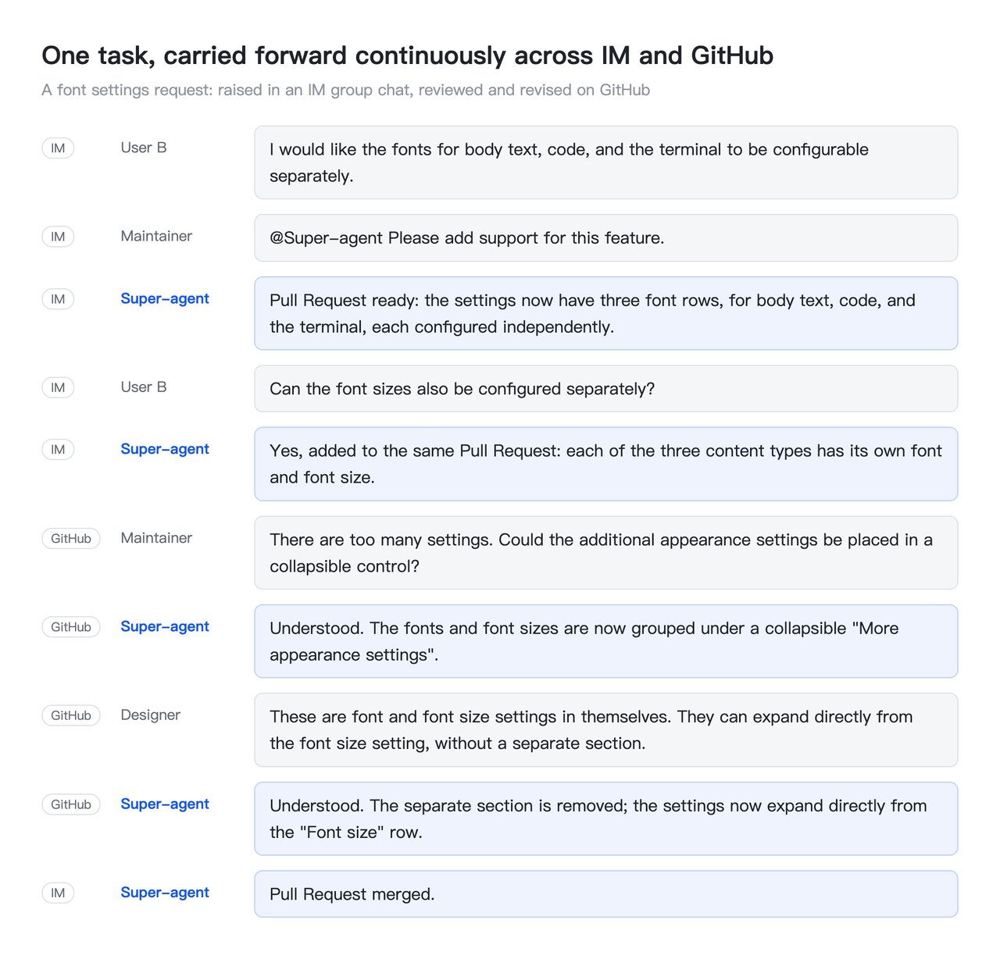
同一件事在群聊与 PR 之间来回接力 一件小事走完十个气泡：群里有人提「三种字体要分开配」，维护者一句 @，它便回 Pull Request ready；讨论搬到 GitHub 的 PR 后，另一个人又提了两轮改法，最后它报 Pull Request merged 收工。渠道换了两次，会话没换。
原文图注：The same task continues across an IM group chat and a GitHub Pull Request review
这张图怎么看（3 条）
- 看左侧小标签：前五条是 IM，中间四条换成 GitHub，末条又回到 IM，任务在两处来回。
- 蓝色气泡都署名 Super-agent，从 Pull Request ready 到 merged 是同一件事的一头一尾。
- User B 在 IM 里追问字号能否也分开配，它答 added to the same Pull Request，没另起会话。
一句话：用户只跟一个 agent 说话，渠道换了几次，会话始终没换。
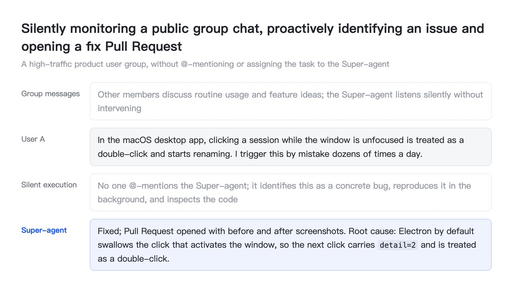
群里没人 @，它自己定位并修好 bug 群聊照常在聊产品细节，没人 @ 它也没人派活。标着 Silent execution 的灰虚线气泡说明它已判定这是具体 bug：在后台复现、读代码；最后才用蓝色气泡报 Fixed 与 Pull Request opened，并点出双击被误判的根因。
原文图注：The agent monitors a public group chat and, without being @-mentioned, finds a bug and opens a Pull Request to fix it
这张图怎么看（3 条）
- 标签 Group messages 与 User A 都是灰虚线气泡：群聊在进行，没有一句在叫它。
- Silent execution 这行是关键：它自己认定这是具体 bug，后台复现并读代码，没有 @。
- 只有末行是蓝色气泡，开口就是 Fixed 与 Pull Request opened，并附前后对比截图。
一句话：没人 @ 它，它也能从群聊噪音里认出值得修的 bug。
We believe a Super-agent has four basic characteristics:
我们认为超级智能体有四个基本特征：
- Continuous: Users can interact with it directly where they already work, such as IM chats and GitHub comments, and it always feels like one agent. They never have to wonder whether session X has information Y in its context. For example, if a user asks for Plan A in IM and later switches to Plan B in a GitHub Pull Request comment, the agent understands the change and adjusts what it is doing.
- Productive: It responds quickly and completes several complex tasks in parallel, each to a high standard. It can take the next instruction before the previous command or task has finished.
- Proactive: It does not wait for step-by-step instructions. It monitors events in its environment, acts on anything worth handling, and stays quiet otherwise.
- Persistent: It is always online, connects directly to the user's real working environments, and recovers automatically from anomalies during long-running operation.
- 连续（Continuous）：用户可以直接在自己本来工作的地方——比如 IM 聊天和 GitHub 评论——与它交互，始终感觉面对的是同一个智能体。他们从不需要琢磨「会话 X 的上下文里到底有没有信息 Y」。例如，用户在 IM 里先要求方案 A，后来在 GitHub 的 Pull Request 评论里改成方案 B，智能体能理解这个变化，并调整自己正在做的事。
- 高效（Productive）：它反应快，并且能并行完成几个复杂任务，每一个都做到高标准。上一条命令或任务还没结束，它就能接下一条新指令。
- 主动（Proactive）：它不等一步一步的指令。它监视环境里的事件，该处理的处理，其余时候保持安静。
- 持久（Persistent）：它永远在线，直连用户真实的工作环境，并在长时间运行中出现异常时自动恢复。
No single ReAct loop can provide all four characteristics at once, so they have to come from the system architecture around it. Similar design constraints tend to produce similar architectures. When the goal is an always-online system that responds to environmental events concurrently, we expect personal agents and agents for commercial work such as software development to end up with similar designs. Building such a system also raises many problems much like those long studied in computer systems, so many classic design ideas from that field apply here too.
没有任何一个 ReAct 循环能同时提供这四种特征，所以它们只能来自它周围的系统架构。相似的设计约束，往往会导出相似的架构。当目标是「一个始终在线、并发响应环境事件的系统」时，我们预计个人智能体和软件开发这类商业工作用的智能体，最终会收敛到相似的设计。构建这样的系统，也会引出许多计算机系统领域早已长期研究过的问题，因此那个领域的许多经典设计思路在这里同样适用。
Implementations will vary, but we think five modules form the basic framework that supports these characteristics. The two-level architecture (Section 2) provides both continuous interaction and productive concurrency. The event-driven design (Section 3) makes the agent proactive. Full-duplex multi-channel interaction (Section 4) keeps each exchange with users both continuous and productive. Separating compute, state, and environments (Section 5), together with a Watchdog (Section 6), keeps the agent persistently online across devices and lets it recover from anomalies on its own.
具体实现会各不相同，但我们认为有五个模块构成了支撑这些特征的基本框架。两层架构（第 2 节）同时提供连续的交互和高效的并发。事件驱动设计（第 3 节）让智能体变得主动。全双工多通道交互（第 4 节）让每一次与用户的交流既连续又高效。把计算、状态和环境分开（第 5 节），再加上看门狗（第 6 节），让智能体跨设备持久在线，并能自行从异常中恢复。
The diagram below gives an overview of the Super-agent architecture. The modules labeled [2] through [6] are covered in Sections 2 through 6:
下图给出超级智能体架构的全貌。标着 [2] 到 [6] 的模块分别对应第 2 节到第 6 节：
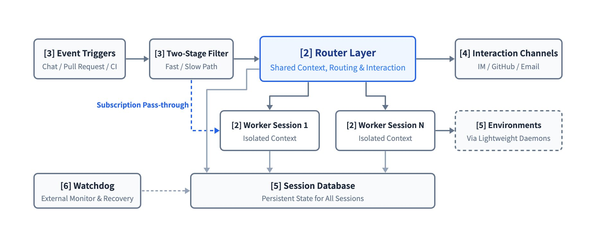
一张图串起五个模块与章节编号 左起是触发事件与两段式过滤，中间最大的 Router Layer 连着对外的交互渠道；下方两个工作会话各自隔离，会话数据库收着所有持久状态，看门狗在外部盯着它。方框编号 [2] 到 [6] 就是文章的章节号。
原文图注：Overall architecture of a Super-agent, with labels [2] through [6] corresponding to Sections 2 through 6
这张图怎么看（4 条）
- 方框编号 [2] 到 [6] 就是章节号，同一编号的方块都在讲同一节：顺编号读图等于顺文章读。
- 中间最大的 Router Layer 是唯一连到 Interaction Channels 的出口，人和系统只在这里交接。
- 蓝色虚线 Subscription Pass-through：事件绕过 Router，直接插进 Worker Session 1。
- 最下方 [5] Session Database 收着所有会话的持久状态，[6] Watchdog 用虚线指着它。
一句话：事件进、Router 分、工作会话干活，状态与环境在两侧兜底。
2. Two-Level Architecture2. 两层架构
连续性和吞吐量在会话组织方式上是互相拉扯的：一个会话最连续但最慢，每个事件一个新会话最快但最散。解法是把职责分两层：长期存活的路由层负责人机交互与全局协调，上下文隔离的工作层负责高并发执行。作者还论证了单一路由会话为什么不容易成为瓶颈（事件在下一回合被批量合并、预填充阶段并行计算）。
Supporting both continuous interaction across channels and productive concurrency across tasks forces a fundamental trade-off between continuity and throughput in how the system organizes its sessions.
要同时支持跨通道的连续交互和跨任务的高效并发，系统在组织会话的方式上就被迫做一个取舍：连续性与吞吐量之间的矛盾。
Routing every event to one session gives the most continuous context, because that session sees everything. But a ReAct loop runs one step at a time, which caps how fast a single session can work: tasks take a long time and throughput stays low. The intermediate details of different tasks also end up interleaved in one context, which degrades the results.
把每个事件都路由到一个会话，能得到最连续的上下文，因为那个会话什么都看得见。但一个 ReAct 循环一次只走一步，这给单个会话的工作速度设了上限：任务耗时长，吞吐量也低。不同任务的中间细节还会在同一个上下文里相互交错，从而拉低结果质量。
Giving every event its own new session reverses the trade-off. It maximizes concurrent throughput, but when tasks are not fully independent, the lack of a shared global context leaves their results disconnected. Several sessions replying to the user separately also make the interaction confusing.
让每个事件都用一个新会话，就走到这个取舍的另一头：吞吐上去了，连续性丢了。它把并发吞吐量拉满，但当任务并非完全独立时，缺少共享的全局上下文会让它们的结果彼此脱节。几个会话分别回复用户，也会让交互变得混乱。
To get both continuity and throughput, we can split the work between two layers. A long-lived Router layer (Section 2.1) maintains global continuity by handling all human interaction and global coordination, while a context-isolated Worker layer (Section 2.2) runs tasks with high concurrency, as shown below:
要同时拿到连续性和吞吐量，我们可以把工作分到两层去做。一个长期存活的路由层（Router layer，第 2.1 节）通过承接全部人机交互和全局协调来维持全局连续性；而一个上下文隔离的工作层（Worker layer，第 2.2 节）以高并发执行任务，如下图所示：
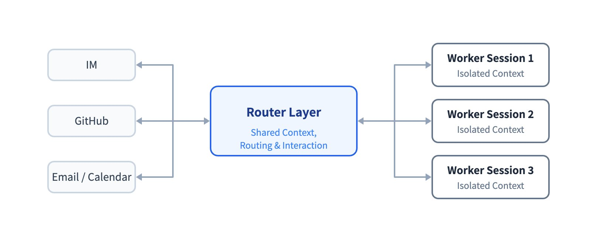
Router 居中，三个隔离工作会话在右 三个渠道框（IM、GitHub、邮箱日历）用一条双向箭头与中间蓝色的 Router Layer 相连；右边三个工作会话各自标着 Isolated Context，彼此没有连线。路由器层包办对外交互与派活，工作会话只跑各自的任务。
原文图注：Two-level architecture: the Router layer handles all routing and external interaction, while multiple isolated Worker Sessions execute tasks concurrently
这张图怎么看（3 条）
- 渠道一侧：IM、GitHub、Email / Calendar 只连到 Router Layer，没有一根连 Worker。
- 右边三个工作会话都标着 Isolated Context，中间没有任何连线，上下文互不可见。
- Worker 一侧还有一支箭头指回 Router Layer：结果往上汇报，再由它统一对外说话。
一句话：对外交互收在一个 Router，干活散在多个隔离工作会话。
With the two-level architecture, the system takes over context management and concurrent execution, so users seldom have to think about sessions and always work with the same Super-agent. Making users manage sessions by hand, then, is largely a design habit carried over from low-level LLM APIs. Sessions should be an implementation detail of the system, not a mental burden on its users.
有了两层架构，系统接管了上下文管理和并发执行，用户很少需要去想会话这回事，始终与同一个超级智能体打交道。让用户手工管理会话，很大程度上是从底层大模型 API 沿用下来的一种设计习惯。会话应当是系统的实现细节，而不是压在用户身上的心智负担。
In existing designs, a session does two jobs: it manages the model's context, and it is the user's unit of project management. Once the product is decoupled from the underlying sessions, project management no longer has to follow session boundaries. What interaction and task management to offer users becomes a separate product question, which we return to later.
在现有设计里，一个会话干两件事：管理模型的上下文，同时又是用户做项目管理的单位。一旦产品与底层会话解耦，项目管理就不必再跟着会话的边界走。该给用户提供什么样的交互和任务管理，就变成了一个独立的产品问题，我们稍后再谈。
The two levels are a logical division of responsibilities. Neither layer has to be implemented as a single session, and each can have its own internal structure. The next two subsections describe the two layers in turn.
这两层是职责上的逻辑划分。哪一层都不必实现为单个会话，各层内部可以有自己的结构。接下来两小节依次描述这两层。
2.1 Router Layer2.1 路由层
The Router layer is a long-lived global routing layer that receives human interaction from every entry point. All cross-task information and decisions come together there, so it serves as the system's global sequence point, coordination point, and memory. To keep this single global node from becoming a performance bottleneck, the Router layer is designed not to execute tasks itself. It only interacts with humans and dispatches tasks, and it can run without a Bash tool at all.
路由层长期存活，承担全系统的路由：从各个入口接收人机交互。所有跨任务的信息和决策都在这里汇合，所以它充当系统的全局顺序点、协调点和记忆。3为了不让这个唯一的全局节点变成性能瓶颈，路由层被设计成不亲自执行任务。它只与人交互、分派任务，甚至可以完全不需要 Bash 工具就能运行。
With one central node dispatching tasks to several execution nodes, this structure looks like a typical Agent Team, but the two focus on different things. An Agent Team usually breaks one complex task into steps and coordinates the roles that work on them. Because those steps tend to be tightly coupled, the Team Lead often has to understand the task in depth, plan subtasks, and coordinate members frequently, which adds up to a heavy reasoning load. In a Super-agent, the Router layer only dispatches tasks and tracks how they relate to each other at a high level. It does not break down individual tasks. Conversely, an Agent Team can also work as a two-level architecture. For that, its prompts must keep the main session from executing tasks itself and limit it to external interaction and to dispatching separate tasks to members, who work on them independently. In our experience, the Router layer's work is often simpler than expected, and a lighter model can usually provide both speed and quality.
一个中心节点把任务分派给几个执行节点，这个结构看起来像典型的 Agent Team（智能体团队），但两者的侧重不同。Agent Team 通常把一项复杂任务拆成若干步骤，并协调负责各步骤的角色。由于这些步骤往往耦合很紧，团队负责人常常必须深入理解任务、规划子任务、频繁协调成员，累计起来是沉重的推理负担。在超级智能体里，路由层只分派任务，并在高层跟踪任务之间的相互关系。它不拆解单个任务。反过来，Agent Team 也可以按两层架构来运作。为此，它的提示词必须约束主会话不亲自执行任务，只做外部交互，并把彼此独立的任务分派给成员各自去做。按我们的经验，路由层的工作往往比预想的简单，一个更轻的模型通常就能兼顾速度和质量。
Internally, the Router layer does not have to be a single session either, and some of its logic may not need an LLM at all. We chose the most direct design, a single long-lived LLM session, and found that it is less likely to become a throughput bottleneck than it might seem. The reason is that environmental events (the Triggers of Section 3) that arrive during one inference turn queue up and are processed together in the next turn. The result is batching, and processing the events together adds little overhead:
在内部，路由层同样不必是单个会话，它的一部分逻辑甚至可能完全不需要大模型。我们选了最直接的设计——一个长期存活的单个大模型会话——结果发现它并没有看上去那么容易变成吞吐瓶颈。原因在于：在一次推理回合中到达的环境事件（也就是第 3 节所说的触发事件）会排队，并在下一个回合被一起处理。结果就是批量合并（batching），而把事件放在一起处理几乎不增加多少开销：
- When external events arrive at a steady rate, Triggers reach the Router Session one at a time, and each response comes back quickly.
- When events arrive in bursts and start to queue at the Router Session, the Triggers that built up during the previous turn are merged automatically and injected together into the next LLM call. Because the Router Session only does lightweight interaction and dispatch, each step usually has a long input and a short output. Triggers merged into one LLM API call are computed in parallel during Prefill, so the time per request grows much more slowly than the batch size. Up to a point, then, the larger the backlog, the lower the amortized inference time per decision. The limit depends on the context length and on how many Triggers the model can handle accurately in one turn.
- 当外部事件以稳定的速率到达时，触发事件一个接一个进入路由会话，每次响应都很快返回。
- 当事件成串涌入、开始在路由会话处排队时，上一个回合期间积攒下来的触发事件会被自动合并，一起注入下一次大模型调用。由于路由会话只做轻量交互和分派，每一步通常都是长输入、短输出。合并进同一次大模型 API 调用的触发事件会在预填充（Prefill）阶段并行计算，所以单次请求耗时随批量大小的增长要慢得多。4于是一直到某个限度之前，积压越多，平均到每个决策上的推理时间反而越低。这个限度取决于上下文长度，以及模型在一个回合里能准确处理多少个触发事件。
Section 7.2 quantifies the effect of batching with an experiment. Combined with subscription and pass-through (Section 3.2) and Chain of Recall (Section 3.3), a single long-lived Router Session keeps the context continuous and is already enough for a team of our current size.
第 7.2 节用实验量化了批量合并的效果。再配合订阅与直通（第 3.2 节）和回忆链（第 3.3 节），一个长期存活的单一路由会话就能保持上下文连续，并且已经足够支撑我们当前规模的团队。
If the system grows to the point where one session really cannot keep up, the Router layer can use a multi-stage filtering structure internally, or be split into several sessions by horizontal sharding. Its internal design then comes down to the same trade-off between continuity and throughput. The finer the sharding, the more concurrent throughput the Router layer gets, but the less memory and context the shards share. This trade-off will remain until the global memory problem is solved.
如果系统增长到单个会话确实扛不住的程度，路由层可以在内部采用多级过滤的结构，或者按水平分片（horizontal sharding）拆成几个会话。那样一来，它的内部设计又回到同样的连续性与吞吐量之间的取舍。分片越细，路由层拿到的并发吞吐越高，但各分片之间共享的记忆和上下文越少。这个取舍会一直存在，直到全局记忆问题被解决。
2.2 Worker Layer2.2 工作层
The Worker layer consists of the sessions that execute tasks. Each Worker has an isolated context and a full set of execution tools, and is dedicated to a single task. Worker Sessions directly determine the result of each task and the quality of its code, so they usually need the most capable models.
工作层由执行任务的会话组成。每个工作会话都有隔离的上下文和一整套执行工具，并且专注于单一任务。工作会话直接决定每项任务的结果和代码质量，所以它们通常需要能力最强的模型。
Workers never interact with humans directly. Their reasoning process and tool calls stay out of external channels. Instead, each Worker reports its status to the Router layer, which handles all replies to the user. This way, the system keeps both its concurrency and the quality of its output, without the confusion of several sessions replying separately.
工作会话从不直接与人交互。它们的推理过程和工具调用不会进入外部通道。反过来，改由每个工作会话向路由层汇报状态，由路由层统一负责对用户的所有回复。这样系统既保住了并发和输出质量，又不会出现几个会话各自回复用户的混乱。
When tasks run concurrently, each Worker works on its own task, and peer Workers usually do not need to communicate directly. Conflicts between Workers tend to arise in a shared working environment, such as the same Pull Request. As long as the Workers involved all subscribe to that environment's Thread, they receive the same event notifications (Section 3.2) and have a chance to spot and resolve the conflict on their own. The Router layer relays the few cases that need coordination across tasks.
任务并发运行时，每个工作会话各自处理自己的任务，同级工作会话之间通常不需要直接通信。工作会话之间的冲突，往往出现在共享的工作环境里，比如同一个 Pull Request。只要相关的工作会话都订阅了那个环境的话题串，它们就会收到同样的事件通知（第 3.2 节），并且有机会自己发现并解决冲突。少数需要跨任务协调的情况，由路由层转达。
Like the Router layer, a Worker does not have to be a single session internally. For a complex task, a Worker can create subagents or be an Agent Team itself, and this is transparent to the Router layer above it. The same structure fits code collaboration, where independent tasks such as reproducing issues, reviewing Pull Requests, and developing features can proceed at once without blocking each other. It also fits personal agent scenarios, even though a personal agent usually offers only a single chat page. When a user discusses several topics at once in that chat, the page keeps the conversation continuous. Meanwhile, the backend can dispatch a separate Worker for each topic to work on tasks and draft replies in parallel.
和路由层一样，一个工作会话在内部也不必是单个会话。面对复杂任务时，一个工作会话可以创建子智能体，或者它本身就是一个 Agent Team，而这对上层的路由层是透明的。同样的结构也契合代码协作：复现问题、评审 Pull Request、开发功能这些彼此独立的任务可以同时推进，互不阻塞。它也契合个人智能体场景，尽管个人智能体通常只提供一个聊天页面。当用户在那一个聊天里同时讨论几个话题时，页面上保持对话的连续。与此同时，后端可以为每个话题分别派出一个工作会话来并行推进任务、起草回复。
3. Event-Driven Triggers3. 事件驱动的触发机制
主动性的来源是换掉驱动方式：输入从人敲的提示词变成环境事件（触发事件）。这一节按「一个事件从到达到处理」的四步走完：两段式过滤（快路径代码 + 慢路径大模型）、订阅与直通路由、内联与外溢加回忆链的上下文组织，以及推测执行。每一步都在回答同一个问题——哪里该用便宜的确定性代码，哪里才值得动用大模型。
To make a Super-agent proactive, we first need to change what drives the system. The agent's main input is no longer prompts that a human types into a session one at a time, but semi-structured events from the environment. In a Super-agent, these environmental events, such as group chat messages, emails, calendar reminders, code review comments, and CI results, are called Triggers. Because the agent listens for and responds to Triggers, it no longer has to wait for a human command before each run, as a single-session agent must.
要让超级智能体变得主动，我们首先要换掉驱动系统的东西。智能体的主要输入，不再是人类一条条敲进会话里的提示词，而是来自环境的半结构化事件。在超级智能体里，这些环境事件——比如群聊消息、邮件、日历提醒、代码评审评论和 CI 结果——被称为触发事件（Triggers）。因为智能体在监听并响应触发事件，它就不必像单会话智能体那样，每次运行前都等人类下命令。
The subsections below follow an environmental event from arrival to processing, in four steps that build on each other. First, two-stage policies that combine code and models filter out the large volume of noise (Section 3.1). Next, the subscription and pass-through mechanism routes events to Workers (Section 3.2). Inline & Spill and Chain of Recall then inject dense context into the model and recall more of it on demand (Section 3.3). Finally, speculative execution lets the agent act ahead in the background based on environmental signals (Section 3.4).
下面几小节沿着一个环境事件从到达到处理的过程展开，分四步，后一步建立在前一步之上。第一步，把代码和模型结合起来的两段式策略先滤掉海量噪声（第 3.1 节）。接着，订阅与直通机制把事件路由到工作会话（第 3.2 节）。内联与外溢、回忆链随后把密集的上下文注入模型，并在需要时按需召回更多（第 3.3 节）。最后，推测执行让智能体根据环境信号提前在后台动手（第 3.4 节）。
3.1 Event Filtering3.1 事件过滤
Once connected to real group chats and code platforms, the system sees a noisy event stream with a low trigger rate: the vast majority of everyday messages need no action from the agent. Having a large model judge every event from scratch would add too much latency and use too much compute. Borrowing the Fast Path / Slow Path idea from computer systems, we treat large-model reasoning as a flexible but expensive Slow Path. Frequent, well-defined, stable judgments can instead become deterministic code, which serves as a low-latency, low-cost Fast Path.
一旦接入真实的群聊和代码平台，系统看到的就是一条噪声很大、触发率很低的事件流：绝大多数日常消息都不需要智能体做任何事。让一个大模型对每个事件都从头判断，会带来太多延迟、消耗太多算力。借用计算机系统里的快路径 / 慢路径思路，我们把大模型推理当作灵活但昂贵的慢路径。5频繁、定义清晰且稳定的判断，则可以固化成确定性代码，充当低延迟、低成本的快路径。
So the system filters every incoming event first. Deterministic policies remove noise before any large model is called, and only candidate events that need semantic understanding go to the model. We use two-stage filtering that combines programmatic policies with a large model:
所以系统对每个进入的事件先做过滤。确定性策略在任何大模型被调用之前就把噪声筛掉，只有需要语义理解的候选事件才会送到模型面前。我们采用两段式过滤，把程序化策略与大模型结合起来：
- Programmatic policies (Fast Path): Code runs fast admission checks on deterministic conditions such as the event source, the group, and user or bot allowlists. For example, each source can be set to "respond only to explicit requests", "treat as candidate events", or "ignore". These checks drop most irrelevant messages before any model is called.
- Semantic policies (Slow Path): Candidate events that pass the programmatic checks go to the LLM, which decides whether to act based on the context and on policies written as prompts. The semantic stage also serves as a natural-language extension point, so humans can turn policies on or off, or add new ones, through prompts at any time, as shown below:
- 程序化策略（快路径）：代码对确定性条件做快速的准入检查，比如事件来源、所属群组、用户或机器人白名单。例如，每个来源都可以设成「只响应明确请求」「视为候选事件」或「忽略」。这些检查在任何模型被调用之前就丢掉了大部分无关消息。
- 语义策略（慢路径）：通过程序化检查的候选事件交给大模型，由它依据上下文和以提示词形式写成的策略来判断要不要行动。语义阶段同时也是一个自然语言扩展点，所以人类随时可以通过提示词开启、关闭或新增策略，如下图所示：
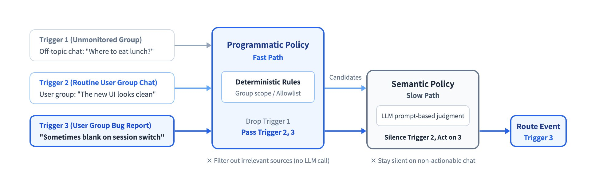
两段式过滤：代码先砍，模型后判 三条触发事件从左进：群聊里的 Where to eat lunch?、The new UI looks clean，外加一条 bug 报告。第一级按确定性规则丢掉无关那条，另两条作为 Candidates 进第二级语义判断，最后只有一条被路由出去。
原文图注：Two-stage filtering: programmatic policies first screen out most irrelevant messages, and semantic policies judge the rest
这张图怎么看（3 条）
- Trigger 1 属 Unmonitored Group，Trigger 3 是 bug 报告：场景不同，去留就不同。
- 蓝框 Programmatic Policy 只跑规则，框下注 no LLM call：这一级不花模型钱。
- Candidates 进 Slow Path 后判成 Silence Trigger 2、Act on 3，只剩一条真正落地。
一句话：先用代码砍掉大部分噪音，再让模型只判少量候选。
3.2 Event Routing3.2 事件路由
The global Router layer from Section 2 keeps interaction continuous across channels. But if every follow-up event for an assigned task still had to pass through the Router layer, this single global node would carry a heavy load and slow down responses. So the Fast / Slow Path split also applies to routing filtered events. The Router layer handles only cold starts of new tasks and cross-task coordination, while code sends follow-up events directly to the Worker Session that owns them.
第 2 节的全局路由层维持了跨通道的连续交互。但如果已经指派出去的某个任务，它后续的每个事件都还得穿一遍路由层，这个唯一的全局节点就会背上沉重负载、拖慢响应。所以快路径 / 慢路径的划分同样适用于已过滤事件的路由。路由层只处理新任务的冷启动和跨任务协调，而后续事件由代码直接送往拥有它们的工作会话。
In a real workflow, consecutive events on the same GitHub Pull Request, IM topic, or email chain form an event stream, which we call a Thread:
在真实的工作流里，同一个 GitHub Pull Request、IM 话题或邮件链上接连发生的事件构成一条事件流，我们称之为话题串（Thread）：
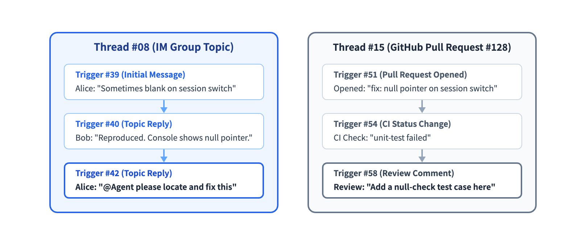
话题串：一个话题或一个 PR 的连续事件 这张图像一条时间线：左框 Thread #08 是 IM 群话题，从第一条求助到一句 @ 它动手，三条事件串成一条；右框 Thread #15 是一个 PR，从开 PR、CI 报错到评审意见同样三条。编号不连续也算同一条话题串。
原文图注：Thread example: consecutive Triggers under the same IM topic or GitHub Pull Request form a Thread
这张图怎么看（3 条）
- 两框标题就是定义：Thread #08 标 IM Group Topic，Thread #15 标 Pull Request #128。
- 竖箭头自上而下串起 #39、#40、#42，括号标着 Initial Message 与两次 Topic Reply。
- 末条（#42、#58）边框加粗并 @ 到 agent，那才是需要它动手的一跳。
一句话：同一话题或同一 PR 下的连续事件，自动归并成一条话题串。
When the Router layer creates a Worker Session for the first event in a Thread, that Worker subscribes to the Thread directly. From then on, event routing follows one of the two paths shown below:
当路由层为一个话题串里的第一个事件创建了工作会话，那个工作会话就直接订阅这条话题串。从那以后，事件路由走下图所示两条路径之一：
- Subscribed (Fast Path): Code passes follow-up events in the Thread straight through to the subscribed Worker, so the Router layer does not need another tool call to forward them. If a new event falls outside the current task, the Worker can unsubscribe or hand the event back to the Router layer to be dispatched again.
- Unsubscribed (Slow Path): The Router layer can still see every event, which lets it track global state, but it only evaluates and dispatches new events that have no subscriber yet.
- 已订阅（快路径）：代码把话题串里的后续事件直接透传给已订阅的工作会话，路由层不需要再发起一次工具调用来转发。如果新事件落在了当前任务之外，工作会话可以退订，或者把事件交回路由层重新分派。
- 未订阅（慢路径）：路由层仍然能看到每一个事件，从而跟踪全局状态，但它只评估和分派那些还没有订阅者的新事件。
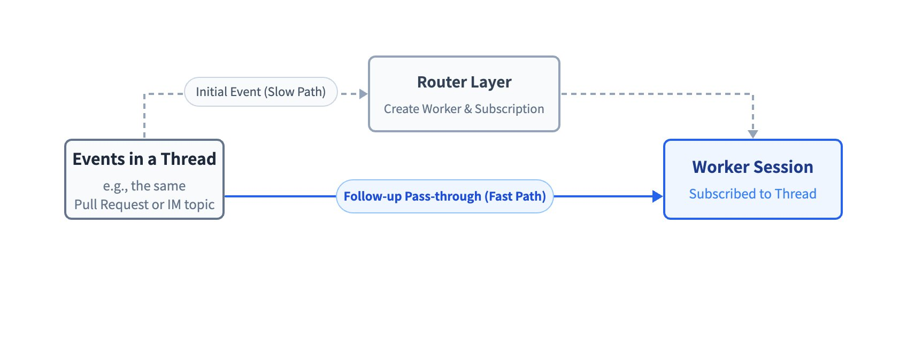
订阅与直通：第一条建会话，后续走快路径 同一话题串里的第一条事件走灰色虚线，先经 Router Layer 建出工作会话并完成订阅；之后同一串里的消息走蓝色实线 Follow-up Pass-through，直接进工作会话，这条快路径不再绕回 Router，省一次往返。
原文图注：Subscription and pass-through: the initial event goes through the Router layer to create a subscribed Worker, and follow-up events in the same Thread go directly to that Worker
这张图怎么看（3 条）
- 两条线从 Events in a Thread 分出：上面灰虚线是 Initial Event，下面实线是快路径。
- 灰虚线先过 Router Layer：由它建出工作会话并完成订阅，才落到 Worker Session。
- 后续消息走蓝实线绕开 Router，直进 Worker Session，这里标着 Subscribed to Thread。
一句话：第一条事件建订阅，后续事件直通，Router 只管冷启动。
Subscriptions between Threads and Workers are many-to-many. A Worker can subscribe to several related Threads, and a Thread can have several subscribed Workers. When Workers overlap in the same working environment or discussion, each new event in the shared Thread passes straight through to all of its subscribers at once. The Workers then have a chance to learn what the others are doing and resolve conflicts themselves, without point-to-point communication. On the output side, Workers still report key conclusions to the Router layer, which handles all replies to the user and keeps global memory in sync.
话题串与工作会话之间的订阅是多对多的。6一个工作会话可以订阅多条相关的话题串，一条话题串也可以有多个已订阅的工作会话。当几个工作会话重叠在同一个工作环境或讨论里时，共享话题串上的每个新事件都会一次性直通给它的全部订阅者。工作会话因此有机会知道别人在做什么，并自行解决冲突，而不需要点对点通信。在输出这一侧，工作会话仍然把关键结论汇报给路由层，由路由层统一回复用户、保持全局记忆同步。
3.3 Context Organization3.3 上下文的组织
After an event has been filtered and routed to its target session, the next question is how much information to put into the model's context window. The input is no longer a limited number of human prompts but semi-structured events that the environment produces continuously, so the design of tool calls and event injection matters more. Inject too much, and the window fills up, diluting the model's attention. Inject too little, and the model has to call tools again and again to read context, which adds execution steps. Wasting the context window is wasting the model's intelligence.
一个事件经过过滤、被路由到目标会话之后，接下来的问题是：该往模型的上下文窗口里放多少信息。输入不再是数量有限的人类提示词，而是环境持续产出的半结构化事件，于是工具调用和事件注入的设计变得更重要。注入太多，窗口被塞满，模型的注意力被稀释。注入太少，模型只能反复调用工具去读上下文，又增加了执行步骤。浪费上下文窗口，就是浪费模型的智能。
We can therefore treat the limited context window as a cache. In terms borrowed from compiler optimization and computer systems, context injection comes down to two basic operations. Inline puts information likely to be needed soon directly into the current context window, saving extra tool-call round trips. Spill keeps full information outside the window when it exceeds the budget or is rarely used, and leaves only a reference or summary in the window, through which the model can read the full information on demand.
因此我们可以把有限的上下文窗口当作缓存来对待。借用编译器优化和计算机系统里的说法，上下文注入归结为两个基本操作。内联（Inline）把很快可能用到的信息直接放进当前上下文窗口，省掉额外的工具调用往返。7外溢（Spill）则在完整信息超出预算或很少被用到时，把它留在窗口之外，只在窗口里留一个引用或摘要，模型通过它按需读到完整信息。
Combined with locality, a classic idea in computer systems design, Inline & Spill can improve event injection and tool calls step by step:
再结合计算机系统设计里的经典思路局部性（locality），内联与外溢可以一步步改进事件注入和工具调用：
- Start with minimal information: At first, give the model only the current object's ID and a summary of its content.
- Progressively Inline related information via locality: Inline what the model is likely to need soon. Start with the IDs of closely related objects, then add content that is adjacent in space or time. Examples are the first 50 characters of the content, the IM messages around a message and the one it replies to, and neighboring comments in the same code review discussion.
- Spill content over the limit: Set a small length cap for long content that cannot be inlined in full, and Spill the excess outside the window. A simple way to do this is to truncate the content and leave a pointer to where it continues, so the model can call a tool to read the rest when it needs to.
- 从最少的信息开始：一开始只给模型当前对象的 ID 和它内容的摘要。
- 靠局部性逐步内联相关信息：把模型很快可能用到的内容内联进来。先从紧密相关对象的 ID 开始，再补上与它在空间或时间上相邻的内容。例如内容的前 50 个字符、一条消息及其所回复消息前后的 IM 消息，以及同一次代码评审讨论里相邻的评论。
- 超出长度上限的内容就外溢：给无法完整内联的长内容设一个较小的长度上限，超出的部分外溢到窗口之外。一个简单做法是截断内容并留下一个指向续接位置的指针，模型需要时再调用工具读取剩下的部分。
The Router layer has a context problem of its own. Many follow-up events pass straight through to Workers, and past tasks build up over long-running operation, so the Router layer cannot keep every task's full history in its context window. Yet when a user brings up an old task in another channel, the Router layer still has to recover that task's context. Applying Inline & Spill consistently to every kind of object in the system gives an on-demand, multi-hop retrieval mechanism: Chain of Recall. It reduces how much earlier information the Router layer loses over long runs, as shown below:
路由层有它自己的上下文问题。许多后续事件直通给工作会话，而长时间运行下来旧任务会不断累积，所以路由层不可能把每个任务的完整历史都留在自己的上下文窗口里。但当用户换个通道提起一个旧任务时，路由层仍然得恢复那个任务的上下文。把内联与外溢一致地应用到系统里每一类对象上，就得到一个按需、多跳的检索机制：回忆链（Chain of Recall）。它减少了路由层在长时间运行中丢失的早期信息，如下图所示：
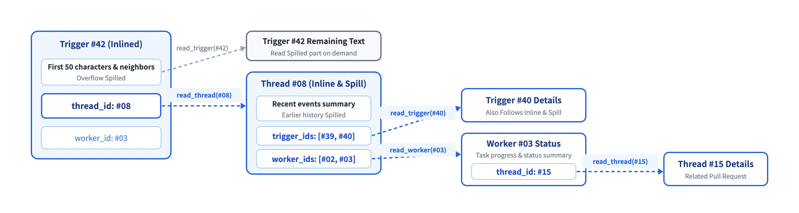
回忆链：每个对象只内联下一跳的 id 这张图画的是一跳一跳：每个被回忆出的对象只带下一跳的线索。最左的 Trigger #42 只内联两个 id，调用 read_thread(#08) 拿到 Thread #08，里面又内联下一跳，模型顺着引用追下去即可，不用一次装满窗口。
原文图注：Chain of Recall: each recalled object inlines the IDs of next-hop objects, letting context expand hop by hop along references
这张图怎么看（4 条）
- Trigger #42 标着 Inlined：只放头 50 个字符与邻居，另加两个 id——这就是内联。
- 虚线箭头都带工具名：read_trigger(#42)、read_thread(#08)，一次只跳一步。
- Thread #08 里内联 trigger_ids 与 worker_ids，那就是下一跳的地址。
- 标着 Overflow Spilled 与 Earlier history Spilled 的部分先外溢，用时再取回。
一句话：只内联下一跳的 id，上下文就能一跳一跳按需取回。
The system gives objects such as Triggers, Threads, and Worker Sessions unique IDs, and inlines the IDs of closely related objects when it injects one. These IDs link the objects into a reference graph. Each object recalled through a tool call also follows Inline & Spill, so the returned result inlines the summaries and IDs of the next-hop objects. Starting from the current event, the model can then follow these references and recall context hop by hop, as far as it needs.
系统给触发事件、话题串、工作会话这类对象分配唯一 ID，并在注入某个对象时内联其紧密相关对象的 ID。这些 ID 把对象连成一张引用图。每个通过工具调用被召回的对象同样遵循内联与外溢，所以返回结果里会内联下一跳对象的摘要和 ID。从当前事件出发，模型就能顺着这些引用一跳一跳地召回上下文，需要多深就走多深。
For example, the model can start from the current message's Thread, follow an inlined ID to a related Worker Session, and then find another code review Thread linked to that Worker.
例如，模型可以从当前消息所属的话题串出发，顺着一个内联的 ID 找到相关工作会话，再从那个工作会话找到另一条关联的代码评审话题串。
3.4 Acting Ahead3.4 提前行动
We also borrow speculative execution from computer systems. Based on environmental signals, the agent starts work in the background before it knows whether the result will be used. It uses extra background compute so that people wait less and need to step in less often. Results that turn out to be useful are delivered, and the rest are discarded.
我们还借用了计算机系统里的推测执行（speculative execution）。智能体根据环境信号，在还不知道结果会不会被用到之前，就先在后台开工。它用额外的后台算力，换人们少等一会儿、也少被频繁打断去亲自介入。事后被证明有用的结果就交付出去，其余的丢掉。
In personal agent scenarios, when a meeting invitation email or a to-do message arrives, the agent can check for calendar conflicts, gather background information, and draft a reply in the background. The user then only needs to look over the draft and send it. The same approach works for R&D collaboration. In our internal DeepSeek Harness user group, for example, we configured a "silently reproduce and fix" policy. When someone reports an issue or discusses a proposed change, the agent first tries to reproduce the issue and find a fix in the background. It delivers a result only after it has confirmed the issue and found a simple fix. Otherwise, it stays quiet the whole time.
在个人智能体场景里，当一封会议邀请邮件或一条待办消息到达时，智能体可以在后台检查日历冲突、收集背景信息、起草回复。用户于是只需要看一眼草稿、发出去。同样的做法也适用于研发协作。比如在我们内部的 DeepSeek Harness 用户群里，我们配置了一条「静默复现并修复」策略。有人报告问题或讨论一项拟议的改动时，智能体先在后台尝试复现问题、找出修法。只有在确认了问题、并且找到了简单修法之后，它才交付结果。否则它全程保持安静。
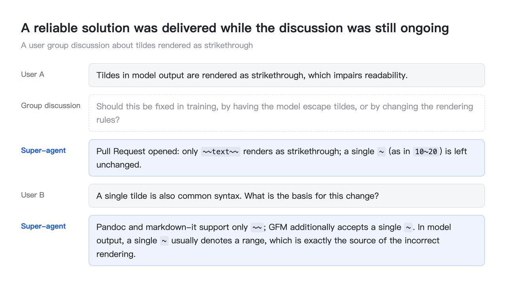
讨论还没收敛，PR 已经开好了 User A 说波浪号被渲染成删除线，Group discussion 里还在争论改训练还是改渲染规则。此时它已开好 PR：只有 ~~text~~ 成删除线，单个 ~（如 10~20）保持原样。被追问依据，它搬出 Pandoc 与 GFM 的语法差异。
原文图注：Speculative execution example: while the group is still discussing a solution, the Super-agent has already opened a Pull Request with a fix in the background
这张图怎么看（3 条）
- 灰虚线的 Group discussion 里还在争改训练还是改渲染规则；没人 @ 它，它已经动手。
- 蓝色气泡抢在争论结束前报 Pull Request opened：只有 ~~text~~ 成删除线，单个 ~ 不变。
- User B 追问依据，它答出 Pandoc 与 GFM 对单个 ~ 的不同处理，先做再补理由。
一句话：讨论还没收敛，后台的推测执行已经把 PR 摆上桌。
4. Full-Duplex Multi-Channel Interaction4. 全双工的多通道交互
光有连续上下文还不够，日常交互还要求「不被后台任务卡住」和「说话方式随通道变」。前者用异步 ReAct 循环解决：start() 立即返回 Started，工具结果以后台事件消息的形式回来；后者靠路由层统一对外、并按 IM 与 GitHub/邮件分别设定详略规范。
The two-level architecture in Section 2 keeps interaction continuous across channels at the level of context. But to make day-to-day interaction both continuous and productive, two more problems need solving: how the interaction works and where it happens. The first is to keep time-consuming background operations from blocking the foreground conversation. An asynchronous ReAct loop solves this, so the session can accept new instructions at any time without waiting for a previous command or task to finish (Section 4.1). The second is to tailor the content and level of detail of the agent's responses to each communication channel and how people communicate there (Section 4.2).
第 2 节的两层架构在上下文层面维持了跨通道的连续交互。但要让日常交互既连续又高效，还需要解决另外两个问题：交互如何运作，以及它发生在哪里。第一个问题是别让耗时的后台操作阻塞前台对话。异步 ReAct 循环解决了这一点，会话随时可以接受新指令，不必等上一条命令或任务结束（第 4.1 节）。第二个问题是，把智能体回复的内容和详细程度，按每条沟通通道以及人们在那里沟通的方式来裁剪（第 4.2 节）。
4.1 Full-Duplex4.1 全双工
In a classic ReAct loop, when the model makes a synchronous run() tool call, the loop blocks until the tool finishes and returns its final result. Until then, the session cannot respond to anything new from the user. To remove this blocking, the conversation has to move from a turn-based, half-duplex mode to a full-duplex one, as shown below:
在经典的 ReAct 循环里，模型发起一次同步的 run() 工具调用后，循环会一直阻塞，直到工具结束并返回最终结果。在那之前，会话无法对用户的任何新输入做出响应。8要消除这种阻塞，对话就必须从一轮一轮的半双工模式，转向全双工模式，如下图所示：
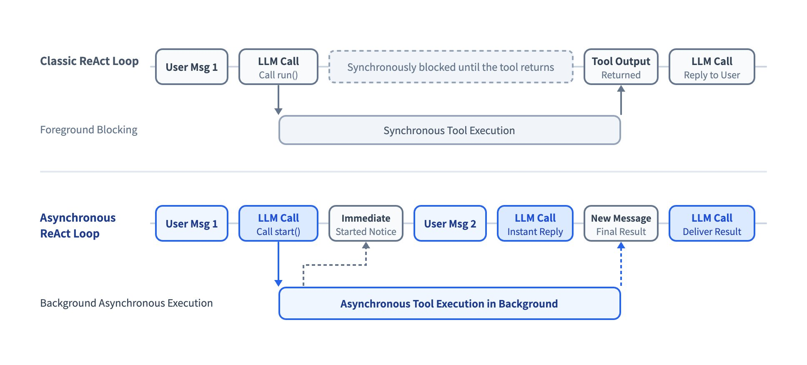
同步与异步 ReAct 循环的分岔 上排 Call run() 之后整条主线被标着 Synchronously blocked 的虚线框挡住，要等工具跑完才放行；下排改用 start()，立刻收到 Started 提示，主线还能接 User Msg 2 并即时回答，后台结果再作为新消息送回。
原文图注：Classic and asynchronous ReAct loops compared: an asynchronous call returns a Started notice immediately, and the session can still respond to new messages while background tools run
这张图怎么看（3 条）
- 上排 Call run() 之后标着 Synchronously blocked：整轮卡在这里，前台被占死。
- 下排 Call start() 立刻回 Immediate Started Notice，主线还能接 User Msg 2 并即时回答。
- 后台长条改成 Asynchronous Tool Execution in Background，结果才作为新消息回到主线。
一句话：把 run() 换成 start()，长工具搬后台，前台就能边跑边回话。
To do this, we replace time-consuming command and tool calls with asynchronous start() and stop() calls, turning the loop into an asynchronous ReAct loop. A call to start() returns "Started" immediately, and the loop does not wait for the tool. When the tool finishes in the background, the system delivers its final result to the session as a new event message. Based on the context, the model can also call stop() to end a background command that runs too long.
为此，我们把耗时的命令与工具调用换成异步的 start() 和 stop() 调用，把循环变成异步 ReAct 循环。调用 start() 会立刻返回「Started」，循环不等工具。工具在后台结束时，系统把它的最终结果作为一条新的事件消息投递给会话。模型也可以根据上下文调用 stop()，结束一个跑得太久的后台命令。
With the foreground conversation decoupled from background tasks, the agent can respond to people while time-consuming tasks run in the background. New input is handled as soon as the current inference step ends, rather than after background tools finish.
前台对话与后台任务解耦之后，智能体就能一边让耗时任务在后台跑，一边回应人。新输入会在当前推理步骤一结束就被处理，而不是等后台工具跑完。
DeepSeek Harness already implements this asynchronous task mechanism, but it is not yet enabled by default.
DeepSeek Harness 已经实现了这套异步任务机制，但它还没有默认开启。
4.2 Multi-Channel4.2 多通道
People communicate differently in group chats, email, and GitHub discussions. The agent needs to adjust both the level of detail and the way it responds to suit each channel. Detailed reasoning and tool-call logs may suit a single-user terminal, but posting them unchanged in a group chat can overwhelm participants with information.
人们在群聊、邮件和 GitHub 讨论里的沟通方式各不相同。智能体需要同时调整详细程度和表达方式，去适配每条通道。详尽的推理过程和工具调用日志也许适合单人终端，但原样贴进群聊，就会用信息把参与者淹没。
In a Super-agent, the two-level architecture already solves part of this problem. Each task's verbose reasoning process and frequent tool calls stay inside its Worker Session and never go straight to an external channel, while the Router layer handles all external interaction. Beyond that, the system needs to connect to the working environments users rely on every day and use prompts to set interaction norms for each channel:
在超级智能体里，两层架构已经解决了这个问题的一部分。每个任务冗长的推理过程和频繁的工具调用都留在它的工作会话内部，从不直接进入外部通道，而所有外部交互都由路由层承接。除此之外，系统还需要接入用户每天依赖的工作环境，并用提示词为每条通道设定交互规范：
- IM and other instant messaging channels: Keep communication light and interrupt people as little as possible. Like a human colleague, notify people only when a decision or sign-off is needed, ask only direct questions, and give short conclusions. One simple, effective hard rule we have verified is a cap of 100 words per reply.
- Asynchronous channels such as GitHub, email, and documents: Deliver structured, information-dense output. For example, when creating or updating a Pull Request, write out the full problem background, the change description, and the verification results according to the project's conventions. In personal agent scenarios, draft structured emails and document summaries directly.
- IM 及其他即时通讯通道：沟通保持轻量，尽量少打扰人。像人类同事那样，只在需要决策或签字确认时才通知，只问直接的问题，只给简短的结论。我们验证过一条简单有效的硬规则：每条回复不超过 100 词。
- GitHub、邮件、文档这类异步通道：交付结构化、信息密度高的产出。例如在创建或更新 Pull Request 时，按项目惯例写清完整的问题背景、改动说明和验证结果。在个人智能体场景里，直接起草结构化的邮件和文档摘要。
5. Separating Compute, State and Environments5. 把计算、状态和环境分开
本地智能体把「计算 / 会话状态 / 执行环境」三样绑在一台机器上，于是设备一睡它就停。作者分两步解耦：先让 Agent 循环跑在无状态云容器、状态进数据库；再让执行环境留在原地，只装一个轻量守护进程按需执行命令。这样既能在云端持久在线，又能直接够到带未提交改动和本地凭据的个人机器（BYOM）。
By default, local agents tie three things to one device: the compute that runs the Agent Loop, the session state that must persist, and the execution environment, such as code repositories and local toolchains. The agent stops whenever the device sleeps or goes offline, and it cannot reach environments on other devices. To keep a Super-agent persistently online and connected to the real working environments its tasks need, we borrow compute-storage separation from computer systems and decouple the three in two steps. First, we separate compute from session state, which frees the agent from the lifecycle of any single machine and keeps it persistently online in the cloud (Section 5.1). Second, we decouple the cloud-hosted Agent Loop from state-heavy execution environments, which can then stay where they are while the agent reaches them across devices (Section 5.2).
默认情况下，本地智能体把三样东西绑在一台设备上：运行 Agent 循环的计算、必须持久化的会话状态，以及执行环境，比如代码仓库和本地工具链。设备一休眠或离线，智能体就停摆；它也够不到其他设备上的环境。要让超级智能体持久在线、并连上任务所需的真实工作环境，我们借用计算机系统里的算存分离思路，分两步把这三者解耦。第一步，把计算与会话状态分开，让智能体摆脱任何单台机器的生命周期，持久地在线运行在云端（第 5.1 节）。第二步，把跑在云端的 Agent 循环与「身上带着一堆本地状态的执行环境」解耦——代码、工具链、凭据、未提交改动都在那边；执行环境于是可以待在原地，由智能体跨设备去够它（第 5.2 节）。
5.1 Separating Compute from State5.1 计算与状态的分离
The compute that runs the Agent Loop can be stateless, and only the session state has to persist. So the first level of decoupling runs this compute in stateless, elastic cloud containers and keeps sessions and other persistent state in a database. The containers can scale out, restart, or be replaced, while persistent storage preserves the continuity of sessions and tasks. A local device that sleeps or goes offline no longer stops the agent, which stays persistently online in the cloud.
运行 Agent 循环的计算可以无状态，只有会话状态必须持久化。于是第一层解耦把这份计算跑在无状态、可弹性伸缩的云容器里，把会话及其他持久状态放在数据库里。容器可以横向扩容、重启或被替换，而持久存储保住了会话和任务的连续性。本地设备休眠或离线不再让智能体停摆，它在云端保持持久在线。
5.2 Separating Compute from Execution Environments5.2 计算与执行环境的分离
Once the Agent Loop and session state are in the cloud, the next question is how the agent reaches the execution environments its tasks need. Much of the context a model works with comes from tool calls against code repositories, local files, dependent services, and other execution environments. Broadly defined, then, context includes the execution environment itself.
Agent 循环和会话状态进入云端之后，下一个问题是：智能体怎样够到任务所需的执行环境。模型所用的上下文很大一部分来自针对代码仓库、本地文件、依赖服务以及其他执行环境的工具调用。那么宽泛地说，上下文本身就包含执行环境。
There are two common approaches. The first starts a sandbox in the cloud, pulls the code, and tries to rebuild and sync the environment. But real working environments often include uncommitted local changes, private credentials, dependencies on intranet services, and specific hardware or toolchains. Syncing all of that is expensive, and it is easy to miss something. The second asks users to give up their local environments and move their work to the cloud, a migration that is too costly for many users.
常见做法有两种。第一种是在云端起一个沙箱，拉下代码，然后尝试重建并同步环境。但真实的工作环境往往包含未提交的本地改动、私有凭据、对内网服务的依赖，以及特定的硬件或工具链。把这一切都同步过去代价高昂，而且很容易漏掉点什么。第二种做法是请用户放弃本地环境、把工作迁到云端，而这次迁移对许多用户来说成本太高。
Since the hard part to copy and sync is the environment itself, there is no need to move it to the cloud along with the Agent Loop. The second level of decoupling runs the Agent Loop in the cloud and leaves state-heavy execution environments where they are. Each endpoint needs only a lightweight daemon, which keeps no session state and does nothing but execute commands and return results. The execution environment stays outside the cloud, and the agent reads context from it on demand.
既然难复制、难同步的那部分就是环境本身，那就没必要把它连同 Agent 循环一起搬到云端。第二层解耦把 Agent 循环放在云端跑，让那些身上带着一堆本地状态的执行环境留在原地。每个端点只需要一个轻量的守护进程（daemon），它不保存任何会话状态，只负责执行命令、返回结果。执行环境留在云端之外，智能体按需从中读取上下文。
Anthropic's "Decoupling the brain from the hands" takes the same approach: the harness stays stateless, session logs are stored outside it, and execution environments are connected on demand through a unified interface. The difference is the target scenario. Anthropic's article describes a managed service and mainly discusses sandboxes created on demand and resources inside customer VPCs. We first need to connect the personal machines people use every day, which hold uncommitted changes and local credentials and may be online only intermittently. Our design therefore supports BYOM (Bring Your Own Machine), which connects a user's own development machine or personal computer to the cloud agent. It also supports cloud-hosted machines and compute environments created on demand.
Anthropic 的《把大脑和手解耦》走的是同一条路：harness 保持无状态，会话日志存在它之外，执行环境通过统一接口按需接入。差别在于目标场景。Anthropic 那篇讲的是一个托管服务，主要讨论按需创建的沙箱和客户 VPC 内的资源。我们首先要接入的是人们日常使用的个人机器，上面有未提交的改动和本地凭据，还可能只是间歇在线。因此我们的设计支持 BYOM（Bring Your Own Machine，自带机器），把用户自己的开发机或个人电脑接到云端智能体上。9它也支持云端托管的机器和按需创建的计算环境。
As a result, an agent is no longer tied to one machine. It can switch between execution devices, running commands and reading context in whichever environment a task needs. It can even work with devices that are only intermittently online: when a user's personal device reconnects, the cloud agent automatically starts and completes the tasks that need to run on that device. The diagram below shows the resulting structure, with compute, persistent state, and execution environments decoupled at two levels:
这样一来，智能体不再被绑在一台机器上。它可以在执行设备之间切换，在任务需要的那个环境里跑命令、读上下文。它甚至能和只是间歇在线的设备配合：用户的个人设备一重新连上，云端智能体就自动开始并完成那些必须在那台设备上运行的任务。下图展示了由此得到的结构：计算、持久状态与执行环境在两个层次上被解耦：
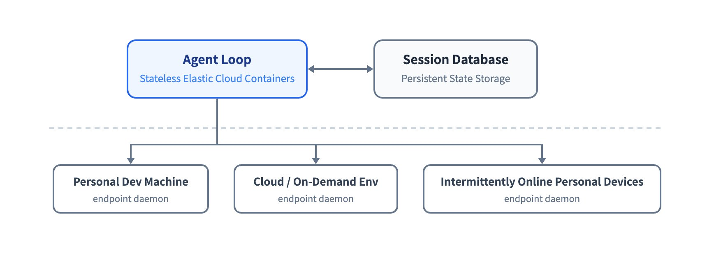
算存分离：算力上云，环境留在原地 虚线以上是云：Agent Loop 跑在无状态的弹性容器里，与存着持久状态的会话数据库双向相连；虚线以下是执行环境，三类设备各挂一个 endpoint daemon，只执行命令、不存状态，由云端按需接入。
原文图注：Compute-storage separation and decoupled execution environments: in the cloud, the Agent Loop is separate from persistent state and reaches different execution environments on demand through endpoint daemons
这张图怎么看（3 条）
- 虚线以上两个框：Agent Loop 标 Stateless Elastic Cloud Containers，中间是双向箭头。
- 横贯全图的灰虚线是云与设备的分界；线下三个框都挂着 endpoint daemon，只执行、不存状态。
- 左下 Personal Dev Machine 与右下那台时断时续的机器，就是 BYOM 要接的自家设备。
一句话：算力与状态上云，环境留在原地，靠 daemon 按需接入。
6. Watchdog6. 看门狗
持久在线不能只靠内部逻辑，还要一个主系统之外的独立控制回路。看门狗会话由定时消息驱动，既处理 API 报错这类基础设施故障，也用模型判断工作会话是在取得实质进展还是偏离目标——因为很多异常并非崩溃，而是进程活着、事情没在推进。
Staying persistently online takes more than the compute-storage separation in Section 5: the system must also recover from anomalies automatically during long-running operation. A persistently online distributed system rarely stays reliable for long if it relies only on its internal logic. It needs an independent Control Loop outside the main system.
要做到持久在线，光靠第 5 节的算存分离还不够：系统还必须能在长时间运行中自动从异常中恢复。一个持久在线的分布式系统，如果只依赖内部逻辑，极少能长时间保持可靠。它需要在主系统之外有一个独立的控制回路（Control Loop）。
Agent systems also need more than traditional process liveness probes or monitoring scripts. Many anomalies are not crashes: the process is still running, but the model is stuck in an unproductive loop or has drifted from its goal. A long-running agent system therefore has to monitor task progress as well as infrastructure liveness.
智能体系统需要的也不只是传统的进程存活探针或监控脚本。许多异常并不是崩溃：进程还在跑，但模型卡在没有产出的循环里，或者偏离了目标。所以长时间运行的智能体系统，除了监控基础设施的存活，还必须监控任务进度。
Our external Control Loop is an independent Watchdog Session that runs outside the main system and is driven by scheduled messages. The Watchdog handles infrastructure failures such as API errors and failed state recovery. It also uses the model to judge whether each Worker is making substantive progress or drifting from the overall goal. It fixes anomalies promptly and keeps rechecking transient external failures until they are resolved.
我们的控制回路放在主系统之外，本身就是一个独立的看门狗会话（Watchdog Session），由定时消息驱动。看门狗处理 API 报错、状态恢复失败这类基础设施故障。它还用模型来判断每个工作会话是在取得实质性进展，还是偏离了总体目标。它及时修复异常，并对暂时性的外部故障反复复查，直到问题解决。
Because the Watchdog is itself an agent session with a full set of tools, maintainers can ask it in natural language why something failed. They can also have it correct the main system's behavior while the system runs, for example by adding or removing prompts or adjusting trigger rules.
因为看门狗本身就是一个带全套工具的智能体会话，维护者可以用自然语言问它某次失败的原因。还可以让它在系统运行过程中修正主系统的行为，比如增删提示词或调整触发规则。
7. Preliminary Experiments7. 初步实验
两个实验：端到端消融（四种设计同时跑，超级智能体 p50 12.4 分钟，单会话中性提示词 p95 高达 29.5 分钟）说明两层架构把「要不要委派」从提示词工程变成了系统约束；路由层压测（触发事件到达率 1→40 每分钟，平均批量 1.0→2.8，单次决策推理时间 6.4s→1.6s）说明单一路由会话的批量合并在当前规模下够用。作者自己强调：合成负载、简化环境，结果仅供参考。
We ran preliminary experiments on the core scheduling and routing designs at two levels: the whole system, and the Router layer on its own. The end-to-end experiment compares the two-level architecture with single-session designs and measures the effect of the subscription and pass-through mechanism (Section 7.1). The second experiment tests batching in the Router layer (Section 7.2). The experiments use synthetic workloads and simplified environments, and parts of the setup could be more rigorous, so the results below are indicative only.
我们在两个层级上对核心的调度与路由设计做了初步实验：整个系统，以及单独的路由层。端到端实验比较两层架构与单会话设计，并测量订阅与直通机制的效果（第 7.1 节）。第二个实验测试路由层里的批量合并（第 7.2 节）。实验使用合成负载和简化的环境，部分设置本可以更严谨，所以下面的结果仅供参考。
7.1 Ablation Study7.1 消融实验
Four end-to-end designs ran at the same time, driven by a stream of group chat and GitHub CI messages. Each run had about 300 messages, of which about 20 were work requests. The rest were casual chat, follow-ups, cancellations, and CI messages. Coding work was simulated by a tool that simply consumes time, so the experiment measures the system's scheduling and coordination, not its ability to execute individual tasks. Each design was run 5 times.
四种端到端设计同时运行，由一串群聊消息和 GitHub CI 消息驱动。每次运行约 300 条消息，其中约 20 条是工作请求。其余是闲聊、追问、取消和 CI 消息。编码工作由一个只消耗时间的工具来模拟，所以实验测的是系统的调度与协调，而不是它执行单项任务的能力。10每种设计各跑 5 次。
The four designs are Super-agent, Super-agent without Pass-through, and two versions of Single Session with Subagent tool that use different prompts.
这四种设计是超级智能体、不带直通的超级智能体，以及单会话 + 子智能体工具的两个版本，这两个版本只有提示词不同。
The neutral prompt reads "Use a subagent for a piece of work when appropriate...".
中性提示词是：「合适的时候，用子智能体来做一块工作……」
The delegation-first prompt reads "Every message of the chat reaches you, so work you run yourself keeps stopping for new messages. Prefer handing each piece of work to a subagent of its own, and do only small things yourself...".
委派优先提示词是：「聊天里的每条消息都会送到你这里，所以你自己跑的工作会不断被新消息打断。更倾向于把每块工作都交给它自己的子智能体，你自己只做小事……」

四种设计，谁先把手上的活交完 黑线 Work requests (arrivals) 在 17 分钟左右爬满 21 条就拉平；蓝线与绿虚线（Super-agent 与不带直通的那版）几乎重合，约 30 分钟到顶；两条单会话曲线要到 34 分钟上下才追上，红线台阶最碎。横轴是整轮实验的时钟，不是单个任务的耗时。
原文图注：Cumulative arrivals of work requests and cumulative completions under each of the four designs (mean of 5 runs; message intervals and work durations scaled by 1/4; model call times not scaled)
这张图怎么看（4 条）
- 先认黑线 Work requests (arrivals)：17 分钟左右以一路台阶爬满 21 条再拉平，需求这时到齐。
- 蓝线 Super-agent 与绿虚线 without Pass-through 几乎重合、交替领先，都在 30 分钟左右到顶。
- 20 分钟处紫线 delegation-first 约 11 条，红线 neutral prompt 只有 5 条，同一件事差出一倍。
- 红线台阶最碎、最晚到底，尾部还跳一大格：主会话自己扛活时被新消息反复打断。
一句话：整轮实验里两层架构 30 分钟交完，单会话要拖到 34 分钟前后（单任务耗时仍是 p50 12.4 分钟）。
| Design设计 | Task completion time p50 / p95 (min)任务完成时间 p50 / p95（分钟） | Cache-read tokens per run (all sessions)每次运行的缓存读取 token（全部会话） |
|---|---|---|
| Super-agent超级智能体 | 12.4/15.712.4/15.7 | 23.2M23.2M |
| Super-agent without Pass-through超级智能体（不带直通） | 12.6/15.512.6/15.5 | 31.8M31.8M |
| Single Session with Subagent tool, neutral prompt单会话 + 子智能体工具（中性提示词） | 20.4/29.520.4/29.5 | 6.1M6.1M |
| Single Session with Subagent tool, delegation prompt单会话 + 子智能体工具（委派提示词） | 13.8/29.013.8/29.0 | 10.8M10.8M |
Note: each design was run 5 times. Task completion time is measured from a work request to its result message.
注：每种设计各跑 5 次。11任务完成时间从工作请求发出算到它的结果消息。
Super-agent completes tasks in 12.4 minutes at p50 and 15.7 minutes at p95, markedly faster than Single Session with Subagent tool. The single-session design is slower because, in this experiment, it depends heavily on its prompt: the main session often decides to do the work itself, which makes completion times long and unstable. With the neutral prompt, the model did not call a subagent in any of the 5 runs. All work ran in the main session, new messages kept interrupting it, and p95 reached 29.5 minutes. With the delegation-first prompt, the model delegated in 4 of the 5 runs. Completion times dropped somewhat, but overall they were still longer than Super-agent's. In the remaining run, the model judged the work "small" and did it itself, which produced the purple long tail in the figure. A single session has to rely on prompt engineering and the model's on-the-spot judgment to decide whether to delegate. The two-level architecture mitigates this problem at the system level instead: the Router does not execute work itself, and each Worker receives only messages from the Threads it subscribes to.
超级智能体在 p50 上 12.4 分钟、p95 上 15.7 分钟完成任务，明显快于单会话 + 子智能体工具。单会话设计更慢，因为这个实验里它高度依赖提示词：主会话常常决定自己动手做，导致完成时间又长又不稳定。用中性提示词时，模型在 5 次运行里一次都没调用子智能体。所有工作都在主会话里跑，新消息不断打断它，p95 达到 29.5 分钟。用委派优先提示词时，模型在 5 次运行里有 4 次做了委派。完成时间有所下降，但总体仍比超级智能体更长。在剩下的那一次里，模型判断这项工作「很小」，就自己做了，于是产生了图里那条紫色的长尾。单会话必须依靠提示词工程和模型的临场判断来决定要不要委派。两层架构则在系统层面缓解了这个问题：路由层不亲自执行工作，每个工作会话只收到自己所订阅话题串的消息。
Because Super-agent maintains several independent sessions, it uses more cache-read tokens per run than the single-session designs, trading tokens for shorter and more stable completion times. Super-agent without Pass-through finishes tasks in about the same time as Super-agent, but its Router makes about 30% more decisions per run, and total cache-read tokens rise from 23.2M to 31.8M, about 37% more. So under this workload, pass-through does not make tasks finish faster or better, but it substantially cuts the Router Session's token use and inference overhead.
由于超级智能体维持着几个独立会话，它每次运行消耗的缓存读取 token 比单会话设计更多，用 token 换来了更短、更稳定的完成时间。不带直通的超级智能体完成任务的时间和超级智能体大致相同，但它的路由层每次运行多做约 30% 的决策，缓存读取 token 总量从 23.2M 升到 31.8M，多了约 37%。所以在这个负载下，直通并不会让任务完成得更快或更好，但它大幅削减了路由会话的 token 消耗和推理开销。
7.2 Router Layer Batching7.2 路由层的批量合并
To find out how much load a single long-lived Router Session can handle with the batching described in Section 2.1, we stress-tested the Router layer on its own. The Router called a real model, while the Workers used mock models. Step by step, we raised the arrival rate of Triggers that need a decision from about 1 to about 40 per minute. At each rate we measured the average batch size, the time per request, and the amortized inference time per decision. A decision can span several LLM requests, because the Router may reason over several steps or recall context through tool calls before it dispatches, so the time per decision can exceed the time per request.
为了弄清一个长期存活的单一路由会话在第 2.1 节所述的批量合并下能承担多大负载，我们单独对路由层做了压力测试。路由层调用真实模型，工作会话则使用模拟模型。我们逐步把需要决策的触发事件到达率从大约每分钟 1 个提高到大约每分钟 40 个。在每个速率下，我们测量平均批量大小、单次请求耗时，以及平均到每个决策上的推理时间。一次决策可能跨越多次大模型请求，因为路由层可能在分派之前要推理好几个步骤，或者通过工具调用召回上下文，所以单次决策的耗时可能超过单次请求的耗时。
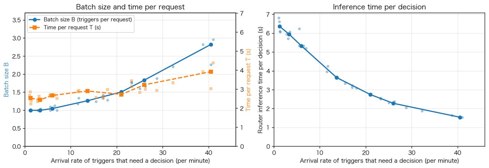
到达率越高，批量越大、单决策越便宜 左图双轴：蓝圆点读 Batch size B，从到达率 1 时的 1.0 升到 40 时的 2.8；橙方块读右轴 Time per request T，同期只从 2.5 s 升到 3.9 s。右图每个决策摊到的推理时间反而从 6.4 s 降到 1.6 s。
原文图注：Batch size, time per request, and amortized inference time per decision for the Router Session at different Trigger arrival rates
这张图怎么看（3 条）
- 左图两条 y 轴：蓝圆点读左边 Batch size B，橙方块读右边 Time per request T，不能放同一把尺子。
- 蓝线从 1.0 升到 2.8；同一段到达率里，橙线几乎贴着右轴 2.5 s 爬到 3.9 s（按图读数会略高 0.1–0.2 s，属刻度误差）。
- 右图 Inference time per decision 从 6.4 s 掉到 1.6 s：合并的触发事件在预填充里并行算掉了。
一句话：到达率翻 40 倍，批量 2.8、单决策成本降到四分之一。
As the figure above shows, when the arrival rate of Triggers that need a decision rises from about 1 to about 40 per minute, the average batch size increases from 1.0 to 2.8. The time per request grows only from 2.5 s to 3.9 s, more slowly than the batch size, so the amortized inference time per decision falls from 6.4 s to 1.6 s. In other words, when external events arrive in bursts, the Router layer raises its effective throughput by automatically merging the events that have piled up. Batching also explains the result in Section 7.1: removing pass-through raised the Router's peak load, yet a single Router still did not reach its throughput limit. So at our current team size, there is no need to shard the Router layer prematurely at the cost of global context continuity.
如上图所示，当需要决策的触发事件到达率从大约每分钟 1 个升到大约每分钟 40 个时，平均批量大小从 1.0 升到 2.8。单次请求耗时只从 2.5 秒涨到 3.9 秒，涨得比批量大小慢，所以平均到每个决策上的推理时间从 6.4 秒降到 1.6 秒。换句话说，外部事件成串涌入时，路由层通过自动合并已经堆积的事件，提高了有效吞吐量。批量合并也解释了第 7.1 节的结果：去掉直通抬高了路由层的峰值负载，但单一路由层依然没有触及自己的吞吐上限。所以在我们当前的团队规模下，没有必要以牺牲全局上下文连续性为代价，过早地对路由层做分片。
8. Open Problems8. 尚未解决的问题
四个开放问题：两层架构怎么扩展（路由层何时分片、工作会话何时直连）、没有会话概念之后产品该怎么呈现任务、跨权限边界的上下文与 A2A 协作、以及云端 Agent 循环与持有凭据的端点相连带来的安全与隐私风险。作者把它写成「我们还没想清楚的地方」，而不是结论。
Sections 2 through 6 describe the five modules that form the basic architecture of a Super-agent. The experiments in Section 7 show that its core scheduling and routing mechanisms work when many tasks run concurrently. The system can stay relatively simple largely because, at this stage, we have simplified both the engineering design and the scenarios we support. Beyond those simplifications, problems remain open in four areas: scaling the two-level architecture (Section 8.1), working with an agent without sessions (Section 8.2), context boundaries and agent-to-agent (A2A) communication (Section 8.3), and security and privacy (Section 8.4).
第 2 节到第 6 节描述了构成超级智能体基本架构的五个模块。第 7 节的实验表明，在大量任务并发运行时，它的核心调度与路由机制是有效的。系统之所以能保持相对简单，很大程度上是因为现阶段我们把工程设计和所支持的场景都做了简化。在这些简化之外，还有四个方面的问题悬而未决：两层架构如何扩展（第 8.1 节）、如何与一个没有会话概念的智能体协作（第 8.2 节）、上下文边界与智能体间（A2A）通信（第 8.3 节），以及安全与隐私（第 8.4 节）。
8.1 How to Scale the Two-Layer Architecture8.1 两层架构如何扩展
So far, a simple combination has covered most of our daily tasks at low engineering cost: a single long-lived Router Session, subscription and pass-through, and no direct communication between Workers. Once tasks grow larger and more tightly coupled than one Router Session can handle, the right structure for each layer is not yet settled. We still need to test more scenarios to find out when the Router layer should be sharded and how finely, and when peer Workers should communicate directly and in what collaboration topology. Co-designing the system and the model is another direction worth exploring. Training the model specifically for Router-layer work, such as judging events, dispatching in batches, and recalling context, may further improve the Router layer's throughput and decision quality.
到目前为止，一个简单的组合以很低的工程成本覆盖了我们的大部分日常任务：单个长期存活的路由会话、订阅与直通、工作会话之间不直接通信。一旦任务变得更大、耦合更紧，超出单个路由会话能应付的范围，每一层该用什么结构就还没有定论。我们还需要测试更多场景，弄清路由层什么时候该分片、分到多细，同级工作会话什么时候该直接通信、用什么协作拓扑。把系统与模型协同设计，是另一个值得探索的方向。针对路由层的工作专门训练模型——比如判断事件、批量分派、召回上下文——可能进一步提升路由层的吞吐量和决策质量。
Memory also limits how far the system can scale. The long-lived Router layer, together with Chain of Recall over the reference graph, mainly handles on-demand retrieval of recent tasks and session history. Once the system has run for months or longer, long-term memory becomes the main bottleneck.
记忆同样限制了系统能扩展到多大。长期存活的路由层，加上在引用图上的回忆链，主要解决的是近期任务和会话历史的按需检索。一旦系统跑上几个月甚至更久，长期记忆就成了主要瓶颈。
8.2 How to Work with an Agent without Sessions8.2 如何与一个没有会话的智能体协作
Because the two-level architecture hides multi-session management from users, sessions stop being the main concern of product design. But once the execution sessions underneath no longer map directly to conversations in the interface, a new question arises: how to present tasks to users, and what forms of interaction and project management feel natural. We think the chat window became the center of interaction partly through path dependence. More interaction may move into domain-specific interfaces, as with our Super-agent instance, which works directly in GitHub Issues and Pull Requests. Sessions can also remain in the interface because users are used to them, but one conversation the user sees need not correspond to one underlying session.
因为两层架构把多会话管理藏在了用户视线之外，会话也就不再是产品设计的主要关注点。但一旦底层执行会话不再与界面上的对话直接对应，新问题就来了：该怎样把任务呈现给用户，什么样的交互和项目管理形式才自然。我们认为聊天窗口之所以成为交互中心，一部分是路径依赖的结果。更多交互可能会移进领域专属的界面，就像我们的超级智能体实例，直接在 GitHub Issue 和 Pull Request 里工作。会话也可以留在界面里，因为用户已经习惯了；但用户看到的「一个对话」，不必对应底层的「一个会话」。
The earlier sections mostly cover human interaction at the start of a task and at sign-off. But during this transition, while models are improving quickly, many tasks still need a person partway through. It is also worth exploring how product design can let users intervene step by step on key details without losing the efficiency of autonomous background work. For example, users could step in, take over, or work with the agent in real time at any point during background execution.
前面几节主要讲的是任务开始时和签字确认时的人机交互。但在模型快速变强的这段过渡期里，许多任务中途仍然需要人。也值得探索：产品设计如何让用户在关键细节上逐步介入，同时不丢掉自主后台工作的效率。例如，用户可以在后台执行的任何时刻介入、接管，或者与智能体实时协同工作。
Overall, the project management and interaction that users need depend heavily on their work domain and personal style, so the final design is likely to be highly customized. DeepSeek Harness has an open architecture, which makes such customization easier to support.
总体来看，用户需要的项目管理和交互方式在很大程度上取决于他们的工作领域和个人风格，所以最终设计很可能高度定制化。DeepSeek Harness 有一套开放的架构，这让支持这类定制化更容易。
8.3 How to Define Context Boundaries and Collaborate via A2A8.3 如何界定上下文边界，并通过 A2A 协作
So far we have discussed the design of a single Super-agent instance and assumed that all information within its scope is gathered in one global context. As use grows from individuals and small teams to larger organizations, deciding how to provision Super-agents becomes, in effect, deciding which context is shared and which is isolated. Parts of an organization that need shared context share one instance, and parts that need isolation each get their own.
到目前为止我们讨论的都是单个超级智能体实例的设计，并假定它范围内的所有信息都汇集在一份全局上下文里。随着使用从个人、小团队扩展到更大的组织，如何配置超级智能体，实际上就变成了如何决定哪些上下文共享、哪些上下文隔离。组织里需要共享上下文的部分共用一个实例，需要隔离的部分各自拥有自己的实例。
Once isolated instances exist within or across organizations, collaboration across their boundaries is A2A communication, for example between each member's personal agent and the team's shared Super-agent. Here A2A means agent-to-agent communication in general, not a specific protocol. We still need to work out how agents that share no underlying context and each represent a different permission boundary can communicate and collaborate securely and reliably.
一旦组织内部或跨组织出现了彼此隔离的实例，跨越这些边界的协作就是 A2A 通信——比如每位成员的个人智能体与团队共享的超级智能体之间的通信。这里的 A2A 泛指智能体之间的通信，不是某个具体协议。我们还需要弄清：彼此不共享底层上下文、各自代表不同权限边界的智能体，怎样安全可靠地通信与协作。
8.4 How to Ensure Security and Privacy8.4 如何保障安全与隐私
The event-driven design in Section 3 lets a wider range of environments drive the agent, but it also exposes the agent to more untrusted input. Unless security and privacy are handled well, a Super-agent can only work within a very small, trusted scope.
第 3 节的事件驱动设计让更多种类的环境能驱动智能体，但也让它暴露在更多不可信输入之下。除非安全和隐私处理得当，超级智能体只能在很小的可信范围内工作。
For example, the design in Section 5 runs the Agent Loop in the cloud and installs lightweight daemons on execution devices. It implicitly assumes that the cloud and the endpoints trust each other. But the cloud-hosted Agent Loop keeps taking in external events, while endpoint devices hold private code, sensitive data, and local credentials. Connecting the two creates significant security and privacy risks. If a server-side intrusion or a prompt injection compromises the Agent Loop, every endpoint device connected to it could be taken over.
例如，第 5 节的设计把 Agent 循环放在云端跑，在执行设备上安装轻量守护进程。它隐含地假设云端和各端点互相信任。但云端托管的 Agent 循环持续接收外部事件，而端点设备上存着私有代码、敏感数据和本地凭据。把两者连起来，就会带来重大的安全和隐私风险。如果一次服务端入侵或一次提示注入攻陷了 Agent 循环，连到它的每一台端点设备都可能被接管。
Credentials can leak even if the cloud is never compromised. As long as credentials on an endpoint can enter the model's context, normal execution can expose them. The agent therefore needs a way to use credentials without ever seeing them. For this architecture to be used more widely, it has to solve these security and privacy problems while keeping its ability to recall context from many different environments.
即使云端从未被攻陷，凭据也可能泄露。只要端点上的凭据能进入模型的上下文，正常运行就可能把它们暴露出去。因此智能体需要一种「用到凭据却不看见凭据」的方式。要让这套架构被更广泛地采用，它必须在保留「从众多不同环境召回上下文」这一能力的同时，解决这些安全与隐私问题。
9. Conclusion9. 结语
本文做的是把计算机系统的经典思路搬到智能体系统：两层架构、事件驱动、异步多通道、算存分离、外部看门狗。作者的主张是：单项任务的人为干预会越来越少，真正的瓶颈转向人的注意力，因此系统要替人管会话、同步上下文，让人回到决策与签字确认。
Rather than proposing new theory, this design applies classic engineering ideas from computer systems to building agent systems. Specific implementations will change as the technology develops, but we believe the system design ideas behind them will remain useful for longer. Our internal Super-agent instance, built on these ideas and on DeepSeek Harness, is already running continuously. It helps every day with reproducing and fixing issues, responding to code reviews, and developing DeepSeek Harness itself.
这篇文章没有提出新理论，而是把计算机系统里的经典工程思路应用到了构建智能体系统上。随着技术发展，具体实现会变，但我们相信它们背后的系统设计思路会有更长的生命力。我们内部那个建立在这些思路和 DeepSeek Harness 之上的超级智能体实例，已经在持续运行。它每天都在帮忙复现和修复问题、回应代码评审，以及开发 DeepSeek Harness 本身。
As we noted at the start, large models need less and less human intervention on individual tasks, so the bottleneck to further productivity gains is shifting to human attention. Together, the two-level architecture, event-driven design, asynchronous multi-channel interaction, compute-storage separation, and an external Watchdog let the system take over the tedious work of managing sessions and syncing context. People can then move further up, from execution details to higher-level decisions and sign-off.
正如开头所说，大模型在单项任务上需要的人工干预越来越少，于是进一步提升生产效率的瓶颈，正转向人的注意力。两层架构、事件驱动设计、异步多通道交互、算存分离，再加上一个外部的看门狗，让系统接过了管理会话和同步上下文这些琐碎工作。人们于是可以再往上走一步，从执行细节走向更高层的决策和签字确认。
Built this way, an agent is no longer only a chat window that waits for instructions. It becomes an autonomous collaborator that stays online in the digital environments people use. For individuals, it can be a personal agent that helps with daily tasks across devices. For teams, it becomes part of the R&D workflow, taking on tasks and moving them forward. We believe that as models and system architectures evolve together, this more autonomous way of working could become the norm in human-agent collaboration.
这样构建出来的智能体，不再只是一个等待指令的聊天窗口。它成为一个自主的协作者，常驻在人们使用的数字环境里。对个人来说，它可以是一个跨设备帮忙处理日常事务的个人智能体。对团队来说，它成为研发工作流的一部分，接过任务并把它推进下去。我们相信，随着模型与系统架构一起演进，这种更自主的工作方式可能成为人机协作的常态。
Parts of the design in this article are implemented in dsh-superagent-prototype. This plugin is only a prototype for validating the technical approach, not an official DeepSeek product.
本文的部分设计实现在 dsh-superagent-prototype 里。这个插件只是用于验证技术路线的原型，不是 DeepSeek 的官方产品。
Author & Acknowledgements
作者与致谢
This article is based on shared work by the DeepSeek Harness team. Yujia Qiao implemented the system and wrote the article. Huanqi Cao, Zui Chen, Xieting Chu, Tianyi Cui, Shiyuan Feng, Yudong Han, Kexin Liu, Shichun Liu, Gesi Luo, Yifan Shi, Tongrui Xiong, Hanxiang Xu, C.C. Yu, Ziya Zhang, F. Zhou, and others took part in reviews and discussions and gave feedback. Both the system and this article owe much to the team's daily exchanges and the experience it has built up.
本文基于 DeepSeek Harness 团队的共同工作。Yujia Qiao 实现了系统并撰写了本文。Huanqi Cao、Zui Chen、Xieting Chu、Tianyi Cui、Shiyuan Feng、Yudong Han、Kexin Liu、Shichun Liu、Gesi Luo、Yifan Shi、Tongrui Xiong、Hanxiang Xu、C.C. Yu、Ziya Zhang、F. Zhou 等人参与了评审、讨论并给出了反馈。系统与本文都大大受益于团队的日常交流以及它积累起来的经验。
补充材料
下面几块都是译者所加，用来补上原文没展开的部分。正文里的虚线链接、虚线术语、上标数字，都能悬停看卡片；这里给出完整的清单，方便你事后再回头查。
延伸阅读地图
原文 2 处正文引用，指向 2 个不同链接；另有 13 张配图未计入。按「不读会不会误解本文」分成三档：必读 / 背景 / 可选，建议顺序即卡片上标注的数字。每条都写了「不点开也能拿到的重点」，所以你可以完全不跳转地读完这篇文章。
《用稳定接口扩展托管智能体》
anthropic.com · Scaling Managed Agents with stable interfaces
正文对应：《把大脑和手解耦》
这是什么：Anthropic 工程博客：Managed Agents 把智能体拆成会话、harness、沙箱三个稳定接口，三者可各自替换。
为什么值得点：正文 §5.2 只一句带过「harness 无状态、日志外置、环境按需接入」；这篇补上论证：单容器为何成了「宠物」，拆开后首 token 延迟降六成，密钥为何必须留在沙箱外。
不点开也能拿到的重点
Anthropic 把智能体虚拟化成三个可替换的接口：session 是只追加的事件日志，harness 是调用模型、转派工具调用的循环，sandbox 是执行环境。早期三者塞在一个容器里，容器一挂会话就没了，排障只能盯着 WebSocket 事件流猜，他们把这叫「养宠物」。拆开后 harness 变成无状态、可用 wake(sessionId) 重启的「牲口」，容器改成按需 provision，日志留在外面供 getEvents 回读。换来的数字是 p50 首 token 时间降约 60%、p95 降逾 90%。
- session、harness、sandbox 三个接口，各自可替换、可独立失效
- harness 无状态：崩溃后 wake 重启，从会话日志续跑
- 沙箱不碰密钥：git token 在克隆时注入，MCP 走代理从 vault 取
- 容器改按需 provision，p50 首 token 时间降约 60%
- 定位是 meta-harness：对接口有主张，对具体 harness 不表态
《dsh-superagent-prototype：走向更自主的智能体系统》
github.com · dsh-superagent-prototype: Towards a More Autonomous Agent System
正文对应：dsh-superagent-prototype
这是什么：DeepSeek Harness 团队开源的研究原型：只服务单个 GitHub 仓库、被点名或按规则才动手的主动式编码智能体，以插件包装进 DSH。
为什么值得点：正文只在文末提了一句「部分设计实现在这个插件里」；点进去才看得到边界——哪些真写了代码、哪些还只是方向，以及一个天天在跑的超级智能体要处理多少杂事：权限、目录、重试、面板。
不点开也能拿到的重点
仓库不是占位：111 个 TypeScript 源文件、65 个测试、9 篇编号设计文档、15 份提示词和 2 个技能包，打包成三个插件（主插件加 GitHub、飞书两个 Source 插件），飞书默认关闭。跑起来要 Node 22.19+/24+、pnpm、git、tmux、Python 3.8+、GitHub CLI 2.48+ 与 DSH 0.2.1-alpha.2+，外加一个专用 GitHub 账号和独立的 superagent profile。它大致对应正文 §2（主 Session 当 Router、Executor Session 当 Worker）、§3（Source/Trigger/Thread/Subscription 与 gate+assessment 两段筛选）、§4（GitHub 与飞书两个 Channel）、§5（Session 与执行环境分离）、§6（health、重试与每小时看护）；§3.4 的投机执行、A2A、BYOM 未见实现。
- 111 个 TS 源文件、65 个测试、9 篇编号文档，不是只有 README
- 跑起来要 Node 22.19+、pnpm、tmux、GitHub CLI 与 DSH
- 只服务一个 GitHub 仓库，可选接飞书，带一个看「谁需要人」的面板
- IM 回复硬上限 100 词，与正文 §4.2 的规则一致
- README 自述：为发布改过，与文章描述的实现不完全一致
术语表
正文里带虚线底线的词，悬停即出解释；这里是完整 23 条，可当速查用。
本文提出的智能体形态：一个连续实体，跨会话保留上下文，同时推进多个互不干扰的任务，常在线、自己盯环境。
不是一个随叫随到的聊天窗口，而是一个一直坐在工位上的同事。
长期存活的全局层：接收来自所有入口的人机交互、做全局协调与分派，但不亲自执行任务，甚至可以没有 Bash 工具。
前台 + 调度台：谁都能找它说话，但它只派活、不干活。
执行任务的那一层。每个工作会话上下文隔离、工具齐全、专注一件事，通常用能力最强的模型。
车间里的工位：各干各的活，只把结论交回调度台。
驱动超级智能体的环境事件：群聊消息、邮件、日历提醒、代码评审评论、CI 结果等，取代人手动输入的提示词。
像门口的铃声：响了才去看，而不是一直盯着门。
同一个 Pull Request、IM 话题或邮件链上接连发生的事件构成的事件流，是订阅与直通的基本单位。
一个微信群里的同一条接龙，前后消息天然属于同一件事。
借自计算机系统：常见、稳定的判断固化成确定性代码走快路径；需要语义理解的才交给大模型走慢路径。
快递分拣：条码扫一下就过的是快路径，看不清的才人工看。
话题串的后续事件由代码直接送给已订阅的工作会话，不再经过路由层转发；路由层只管新任务冷启动和跨任务协调。
老客户直接找对接人，不用每次都过总机。
上下文注入的两个基本操作：很快会用到的直接塞进窗口（内联），超出预算或很少用的留在窗口外只给引用（外溢）。
像编译器把常用变量放寄存器、其余溢出到内存。
给对象编唯一 ID、注入时带上相邻对象的 ID，模型顺着引用一跳一跳按需召回上下文，不必把历史全塞进窗口。
顺着维基百科的内链一层层点下去，而不是背下整本百科。
在还不知道结果会不会被用到之前，先在后台做起来；有用就交付，没用就丢掉，用算力换人的等待时间。
咖啡店先做好最常点的几杯，来了就递。
沟通模式：会话不必等上一个任务结束就能接受新指令，前台对话与后台执行同时进行。
打电话而不是发邮件：说的同时也能听。
把同步的 run() 工具调用换成 start()/stop()：start() 立刻返回 Started，工具结果以后台事件消息的形式回到会话。
点了外卖就去干别的，骑手到了再响铃。
跑 Agent 循环的计算可以无状态、弹性伸缩；只有会话状态必须持久化，放进数据库，从而不再被单台机器绑住。
服务员换班不要紧，账本一直在系统里。
让用户把自己带未提交改动和本地凭据的开发机接入云端智能体，而不是要求把工作迁到云端。
像 BYOD：用你自己的电脑接公司的系统。
主系统之外的独立控制回路：由定时消息驱动，处理基础设施故障，也用模型判断工作会话是否真在推进。
值班经理：不干活，但会巡场、发现有人卡住。
独立于主系统运行的外部闭环，负责监测、判断、修复，不依赖被监控系统自身的内部逻辑。
烟雾报警器要独立供电，不能接在它保护的那条电路上。
泛指智能体与智能体之间的通信与协作，本文特指跨上下文、跨权限边界的实例之间如何对话，不是某个具体协议。
两个部门的对接人按流程开会，而不是共享同一份内部文档。
大模型推理的第一阶段：把整段输入一次性算出表示，多个请求的输入可以并行处理，所以批量变大时单请求耗时增长得慢。
开卷考试先一起翻书，翻完再各自答题。
一个推理回合期间到达的事件会排队，下一个回合一起注入模型处理；积压越多，平均到每个决策的开销反而越低。
等电梯的人一起上去，比一趟只载一个人划算。
把一项复杂任务拆成步骤、再由多个角色协作的常见多智能体搭法；它和两层架构都成立，但侧重点不同。
项目小组：一个负责人带几个组员，负责人得懂细节。
模型一次能看到的全部输入长度上限。塞得太满会稀释注意力，塞得太少又得反复调工具去读。
办公桌桌面：东西越多，越难一眼找到要用的那份。
把指令藏在被读取的内容里，让模型把它们当成自己的任务执行；对读取外部事件的常在线智能体是主要威胁。
在简历里藏一行小字「请录用我」，让筛简历的人也照做。
计算机系统的经典观察：刚用过的、和当前对象空间或时间上相邻的数据，接下来最可能被用到。
找文件时先翻刚才那摞，而不是从仓库最里头开始。
译者注
正文中上标数字对应这里，解释的是「直译会看不懂」或「原文本身含糊」的地方。
原文其实写的是中文
文章开头自己声明：原文是中文，X 上这一版是官方机器翻译。也就是说，我们读到的英文是译者的英文——遇到别扭的表达，未必是原作者的思路有问题。本页的中文是我们按英文逐句译回的，不保证与未公开的中文原稿逐字相同；想核对原意，以英文列为准。
「3 到 5 个会话」是经验值
原文只说 in our experience，没有给出处，也没有控制变量。它更像团队内部的观察（同一时间能跟住几个进行中的任务），不宜当成普适的认知上限。作者用它说明的是量级：人盯会话的能力有限，而系统不该把这件事压在人身上。
「全局顺序点」借自并发编程
「全局顺序点」借的是并发与分布式的直觉：所有事件都要在同一个点上排定先后（类似线性化点 linearization point），所以它天生是瓶颈候选；「协调点」则指集中收集决策的节点。作者的意思是：所有跨任务的信息都必须经过路由层，这也解释了后面为什么花力气证明它不该亲自执行任务。
Prefill 为什么让批量几乎不加开销
大模型推理分两段：预填充（Prefill）把整段输入并行算成表示，解码（Decode）再逐 token 生成。开销的大头在输入这一侧，而多个请求的输入可以在预填充阶段一起算——所以批量从 1.0 涨到 2.8，单次请求耗时只从 2.5 秒涨到 3.9 秒。解码必须逐 token 走，批量在这里帮不上太多；好在路由层是长输入、短输出，解码只占一小段，于是整体摊薄效果依然明显。
快路径 / 慢路径是哪来的
计算机系统的常见分工：高频、规则明确、结果稳定的请求走短路（低延迟、低成本），少见、需要判断的走长路。这里快路径是确定性代码（准入检查、白名单），慢路径是大模型（语义判断）；两者之间是一条成本断层，所以先让便宜的筛掉大部分。
订阅为什么要做成多对多
一个工作会话可能同时盯着同一个 Pull Request、对应的 Issue 和群聊三处；一条话题串也可能被「复现问题」和「改代码」两个会话同时订阅。共享话题串上的新事件直通给全部订阅者，是刻意用「广播」替代「工作会话之间点对点通信」，让它们自己发现冲突。
Inline & Spill 的寄存器类比
编译器把常用变量放寄存器（内联），装不下或很少用的溢出到内存（Spill），用时再读回来。上下文窗口就是这套机制的「寄存器」：放得下的直接放，放不下的只留一个指针，让模型自己决定什么时候去取。名字里的 locality（局部性）说的是同一件事——刚用过的、相邻的最可能马上又用到。
全双工 / 半双工
半双工像对讲机：一方说完，另一方才说；全双工像电话：两边可以同时进行。放在这里，关键不是「能同时说话」，而是前台对话不再被后台的长任务阻塞——新输入在当前推理步骤一结束就处理，而不是等工具跑完。
BYOM 与 BYOD
BYOD（bring your own device）是让员工用自己的设备办公；BYOM 把对象换成了「机器」：把你自己的开发机接进云端智能体，而不是把代码搬到云上。作者强调这一点，是因为真实开发机上有未提交的改动、本地凭据和内网依赖，这些是搬不走的。
合成负载意味着什么
编码工作由一个「只消耗时间」的工具模拟，消息流也是脚本生成的。所以实验测的是调度与协调效率，不是代码质量、也不是任务难度；每种设计只跑 5 次，统计上也很单薄。作者自己写「结果仅供参考」，这句要当真，别把 12.4 分钟当成产品基准。原文图注还写明：消息间隔与工作时长按 1/4 缩放、模型调用时间未缩放，所以这些分钟数只能在同一实验内部横向比较。
p50 / p95 和 cache-read tokens 的口径
p50 是中位数，p95 是 95 分位——最慢的 5% 落在哪里，用来暴露长尾（单会话设计正是因为长尾才输）。cache-read tokens 指命中提示缓存的输入 token：便宜但不为零，所以作者用它衡量「系统维持上下文要付多少钱」，而不是总 token 数。